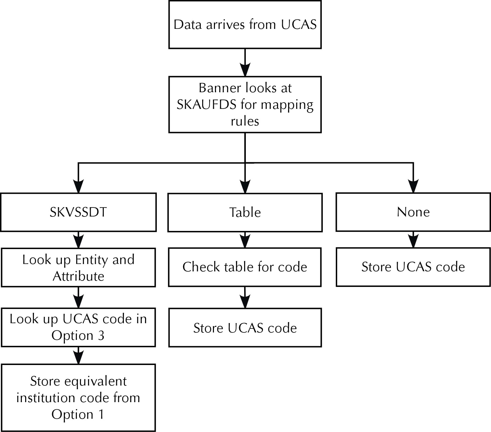

UCAS Banner Student - Reference
Pages for Universities and Colleges and Admissions Service for the UK.
User Group Maintenance (GKAGRPP) page
Use this page to assign user IDs to group codes. Data entered on this page is stored in the GKRGRPP table. A user can be in only one group.
System Parameter Maintenance (GKAKSYS) page
Use the GKAKSYS page to enter or display system parameters.
Base section
Use this section to enter the system parameter details.
| Field | Description |
|---|---|
| Name | Name of the parameter. |
| Restricted | Indicates whether the value of this parameter is restricted to a set of values. |
| Value | Value associated with this parameter. |
| Group | Sorting group code. This is used to group related system parameters together when queried. |
| Description | Description of the parameter. |
| Notes | Text explaining the use and values of this parameter. |
User Group Code Validation (GKVGRPS) page
Use this page to define group codes and their associated descriptions.
System Code Validation (GKVKSYS) page
Use the GKVKSYS page to enter or display system codes to be used on the System Parameter Maintenance (GKAKSYS) page.
| Field | Description |
|---|---|
| Code | System code. |
| Description | Description of the system code. |
| Activity Date | Date on which the record was last updated. Display only. |
UCAS User Group Approvals (SKAGRAP) page
Use this page to define approvals rules for groups of users (that is, whether decisions entered by a group must be approved). Decisions do not require approval when entered by any user who is in a group with no defined rules. This page uses the SKRGRAP table.
| Field | Description |
|---|---|
| Normal Decisions | Indicator for whether normal (initial and amended) decisions must be approved if entered by the users assigned to the group.
Check Courses: Check the approval rules for the course on the UCAS Course/Campus Validation (SKVCRSE) page. If the Normal Decisions check box is selected for the course, then the decision needs to be approved. Yes: All normal decisions made by the users in this group must be approved. No: Normal decisions made by users in this group do not need to be approved. |
| Confirmation Decisions | Indicator for whether confirmation decisions must be approved if entered by the users assigned to the group.
Check Courses: Check the approval rules for the course on SKVCRSE. If the Confirmation Decisions check box is selected for the course, then the decision needs to be approved. Yes: All confirmation decisions made by the users in this group must be approved. No: Confirmation decisions made by users in this group do not need to be approved. |
| Clearing Decisions | Indicator for whether clearing decisions must be approved if entered by the users assigned to the group.
Check Courses: Check the approval rules for the course on SKVCRSE. If the Clearing Decisions check box is selected for the course, then the decision needs to be approved. Yes: All clearing decisions made by the users in this group must be approved. No: Clearing decisions made by users in this group do not need to be approved. |
| Direct Applicant Decisions | Indicator for whether direct applicant decisions must be approved if entered by the users assigned to the group.
Check Courses: Check the approval rules for the course on SKVCRSE. If the Direct Applicant Decisions check box is selected for the course, then the decision needs to be approved. Yes: All direct applicant decisions made by the users in this group must be approved. No: Direct applicant decisions made by users in this group do not need to be approved. |
Supplemental Applicant Information (SKASAIN) page
Use this page to enter and display data required for admissions processing, over and above that stored in baseline Banner Student.
This page can also be used as the starting point for entering information relating to direct entrants.
Key block
| Field | Description |
|---|---|
| Applicant Number | Banner-generated applicant number for applicants after September 2009, or UCAS applicant number for applicants up to September 2009. Applicants are not normally aware of this number. If you enter a value in the ID field and click the LOV for this field, only the applicant numbers that apply to that person are displayed on the Applicant Selection (SKAUAPP) page. |
| Personal ID | UCAS personal ID. In combination with the application scheme code, this is the unique identifier for an applicant in the UCAS database. Applicants use UCSAS personal IDs on their UCAS applications. If you enter a value in the ID field and click the LOV for this field, only the personal IDs that apply to that person are displayed on SKAUAPP. |
| Application Scheme Code | Application scheme code. The first two characters represent the scheme, according to the following: UC: UCAS GT: UTT DI: Direct CL: Clearing UC and GT are codes used by UCAS, whereas DI and CL are codes used only in Banner UCAS. The last two characters are the sequence number of this application from this applicant (same personal ID) for this scheme. The application scheme code is to be used in conjunction with the personal ID as a unique identifier for an application. In Banner UCAS, the applicant number remains the unique identifier for an application. |
| Generate Applicant Number | Click this button to generate a new applicant number. The system populates the following fields:
The personal ID will be the same number as the applicant number, with an additional zero at the beginning, and the direct applicant prefix or suffix. The application scheme code will default to DI01. You can overwrite the generated values. |
Admissions Processing tab
Use this tab to enter and display admissions processing information. This tab displays data from the getUCASApplicantsDetails and getGTTRApplicantsDetails XML-Link methods unless otherwise indicated. This tab uses the SKRSAIN table.
You can use the fields in the Accommodation Details section to create an accommodation request in the Dorm Room and Meal Application (SLARMAP) page.
| Field | Description |
|---|---|
| Area of Permanent Residence | Country associated with the applicant’s permanent or home address before entry into the programme of study. The description is from the Short Title field on the Value Mapping and List-of-Value Definition (SKASSDT) page for the ODBCLINK entity and the REFAPR attribute. |
| CWD Flag | Completely withdrawn (CWD) flag. |
| Adjustment Status | The description displayed for this field is determined by the SKRUFDS record for SKRSAIN_ ADJUSTMENTSTATUS. This is delivered mapped through SKVSSDT using entity STARK and attribute ADJUSTMENTSTATUS. Values are as follows: L: Eligible for adjustment R: Registered for adjustment E: Adjustment period has expired P: Placed in adjustment null: Not eligible |
| Returned Mail | Check box used to indicate whether correspondence sent to the applicant has been returned. |
| UCAS Gender Identity | If the GENIDEN parameter on GKAKSYS is set to SKASAIN or BOTH, the applicant’s gender identify is stored in this field. This field is not displayed if it is set to be hidden on the Data Display Mask Rules (GORDMSK) page. |
| UCAS Religion | If the RELBEL parameter on GKAKSYS is set to SKASAIN or BOTH, the applicant’s religion is stored in this field. This field is not displayed if it is set to be hidden on GORDMSK. |
| UCAS Sexual Orientation | If the SEXORINT parameter on GKAKSYS is set to SKASAIN or BOTH, the applicant’s sexual orientation is stored in this field. This field is not displayed if it is set to be hidden on GORDMSK. |
| Accommodation Details section | |
| Status | If the value of this field is “Required”, a default SLBRMAP record is created when the record is saved. This can be viewed and updated in the Dorm Room and Meal Application (SLARMAP) page. |
Supplemental Application Details
Use this tab to enter or display information about the baseline application records linked to the UCAS Choices for this applicant.
| Field | Description |
|---|---|
| Application Number | Baseline Admissions Application (SAAADMS) number for this choice. |
| Mode | Mode of study the applicant is expected to follow if this application is successful. |
*J Qualification Data (1-15) and *J Qualification Data (16-30) tabs
These tabs use the SKRSAIN table. The data is downloaded from the getUCASHESAData XML-Link method. Fifteen fields are available for each field label.
| Field | Description |
|---|---|
| Qualification Subject | ABL subject code. The value is from the ablSubjectCode element of the getReferenceOfferSubjects method. |
Historic Data 1 tab
This is the first of two tabs that display data that is no longer supplied by UCAS or is not used with XML-Link.
| Field | Description |
|---|---|
| UCAS Run Number | The UCAS run number is increased by one each time UCAS processes a batch of application forms, and is the link between the electronic records and the batches of application forms. This field is not used with XML-Link. |
| Coded Information Change Date | This field is not used with XML-Link. |
| Fee Level | This field is not used with XML-Link. |
| Firm Choice Number | This field is not used with XML-Link. |
| Insurance Reply | This field is not used with XML-Link. |
| Exam Details Changed Date | This field is not used with XML-Link. |
| GTTR Clearing Status | This field is not used with XML-Link. |
Historic Data 2 tab
This is the second of two tabs that display data that is no longer supplied by UCAS or is not used with XML-Link.
Value Mapping and List-of-Value Definition (SKASSDT) page
Use this page to map between institutional codes and UCAS values (for example, disability and nationality codes). The default mappings should be reviewed to ensure that they meet institutional requirements.
Sets of mapping values are defined using a combination of an entity and an attribute. In the data delivered with the HESA or UCAS modules, many of these are the names of Banner tables and columns. However, there is no need for the value in the Entity and Attribute fields to refer to Banner data structures. In some cases, the mapping sets can be used in multiple contexts (and shared between UCAS and HESA functionality). Institutions may want to use their own naming conventions when creating local mapping.
This page is a generic mapping page that is used in the Banner UCAS module and the Banner HESA module.
Base section
Use this section to specify the institutional codes for which you want to map.
| Field | Description |
|---|---|
| Option 1 | This value specifies the Banner code. |
| Short Title | The short title populates the Long Title field. |
| Effective Date | The date defaults to the current date. This field can be updated. |
| Next Change Date | Next change date for the mapping, which provides an audit trail of changes made. When the information for the same HESA number is changed, the Next Change date is set to the effective date for the new information. This value is system-generated. |
| Option 2 | HESA code (usually). |
| Option 3 | UCAS code (usually). |
| Data1/Data2/Data3 | These fields are for institution use to enter local mapping or translation requirements. |
| Copy Forward | Click this button to copy forward a selected mapping entry for update, during the creation of a new record. |
UCAS Abbreviations (SKAUABR) page
Use this page to view the UCAS abbreviation codes and to enter institution-defined abbreviation codes.
This page uses the following code abbreviations:
- U: unconditional offer
- W: withdrawal
- Rej: reject
- RR: release into clearing offer
- Tariff : tariff offer
| Field | Description |
|---|---|
| Letter Format Code | UCAS letter format associated with the abbreviation. |
Online Actions and Comments Maintenance (SKAUACT) page
Use this page to update or display action and comment data entered on the Applicant Summary (SC_UCAS_SUMMARY) page (stored in the SKRUOCT table). You cannot create new records in this page, but you can update or delete existing records.
You can specify an individual applicant and view all their action records, or you can specify a review group and entry term to display all SKRUOCT records for that group and term combination.
You can export data to a .csv file using the Extract Data With Key or Extract Data No Key functions on the Help menu.
| Field | Description |
|---|---|
| Applicant Number | Banner-generated applicant number for applicants after September 2009, or UCAS applicant number for applicants up to September 2009. Applicants are not normally aware of this number. If you enter a value in the ID field and click the LOV for this field, only the applicant numbers that apply to that person are displayed in SKAUAPP. |
| Personal ID | UCAS personal ID. In combination with the application scheme code, this is the unique identifier for an applicant in the UCAS database. Applicants use UCSAS personal IDs on their UCAS applications. If you enter a value in the ID field and click the LOV for this field, only the personal IDs that apply to that person are displayed in SKAUAPP. |
| Application Scheme Code | Application scheme code. The first two characters represent the scheme, according to the following:
UC: UCAS GT: UTT DI: Direct CL: Clearing UC and GT are codes used by UCAS whereas DI and CL are codes used only in the Banner UCAS module. The last two characters are the sequence number of this application from this applicant (same personal ID) for this scheme. The application scheme code is to be used in conjunction with the personal ID as a unique identifier for an application. In Banner UCAS, the applicant number remains the unique identifier for an application. |
Base section
This section sorts records into ascending order by applicant number first, and then in descending order by sequence number. This ensures that the most recent record entered for an applicant is listed first.
Applicant Detail tab
This tab displays information for the record selected in the base section.
Applicant Education (SKAUAED) page
Use this page to view data held in the Applicant Education (SKRUAED) table. The data is downloaded from the getUCASApplicantEducation and getGTTRApplicantEducation XML-Link methods. This page is display only.
Key block
Specify the applicant's details for which you want to view the education details.
| Field | Description |
|---|---|
| Applicant Number | Banner-generated applicant number for applicants after September 2009, or UCAS applicant number for applicants up to September 2009. Applicants are not normally aware of this number. If you enter a value in the ID field and click the LOV for this field, only the applicant numbers that apply to that person are displayed in SKAUAPP. |
| Personal ID | UCAS personal ID. In combination with the application scheme code, this is the unique identifier for an applicant in the UCAS database. Applicants use UCSAS personal IDs on their UCAS applications. If you enter a value in the ID field and click the LOV for this field, only the personal IDs that apply to that person are displayed in SKAUAPP. |
| Application Scheme Code | Application scheme code. The first two characters represent the scheme, according to the following: UC: UCAS GT: UTT DI: Direct CL: Clearing UC and GT are codes used by UCAS whereas DI and CL are codes used only in the Banner UCAS module. The last two characters are the sequence number of this application from this applicant (same personal ID) for this scheme. The application scheme code is to be used in conjunction with the personal ID as a unique identifier for an application. In Banner UCAS, the applicant number remains the unique identifier for an application. |
| ID | Banner person ID. |
| Source | Source of the application. Display only. |
Applicant Education section
View the educational details of the applicant specified in the Key block.
| Field | Description |
|---|---|
| Education ID | This field is not used with XML-Link. |
| Establishment Details | Name and place of the establishment/education details. |
| School | |
| Date From | |
| Date To | |
| Attendance | Applicant's type of attendance at the educational establishment. FT: Full time PT: Part time SS: Summer School SW: Sandwich Course |
| Study Delivery Mode | Code to indicate the study delivery mode. |
Applicant Employment (SKAUAEM) page
Use this page to view data held in the Applicant Employment (SKRUAEM) table. The data is downloaded from the getUCASApplicantsEmployment XML-Link method. The page is display only.
| Field | Description |
|---|---|
| Applicant Number | Banner-generated applicant number for applicants after September 2009, or UCAS applicant number for applicants up to September 2009. Applicants are not normally aware of this number. If you enter a value in the ID field and click the LOV for this field, only the applicant numbers that apply to that person are displayed in SKAUAPP. |
| Personal ID | UCAS personal ID. In combination with the application scheme code, this is the unique identifier for an applicant in the UCAS database. Applicants use UCSAS personal IDs on their UCAS applications. If you enter a value in the ID field and click the LOV for this field, only the personal IDs that apply to that person are displayed in SKAUAPP. |
| Application Scheme Code | Application scheme code. The first two characters represent the scheme, according to the following:
UC: UCAS GT: UTT DI: Direct CL: Clearing UC and GT are codes used by UCAS whereas DI and CL are codes used only in the Banner UCAS module. The last two characters are the sequence number of this application from this applicant (same personal ID) for this scheme. The application scheme code is to be used in conjunction with the personal ID as a unique identifier for an application. In Banner UCAS, the applicant number remains the unique identifier for an application. |
Base section
| Field | Description |
|---|---|
| Employment ID | This field is not used with XML-Link. |
| Programme Type | This field is not used with XML-Link. |
| Qualification | This field is not used with XML-Link. |
Applicant First Degree (SKAUAFD) page
Use this page to view applicant first degree data held in the Applicant First Degree (SKBUAFD) table.
The data is downloaded from the getGTTRApplicantFirstDegrees XML-Link method. The page also displays degree contents data held in the Applicant Degree Contents (SKRUADC) table, which is downloaded from the getGTTRApplicantDegreeContents XML-Link method. The page displays only UTT applicants and is display only.
| Field | Description |
|---|---|
| Applicant Number | Banner-generated applicant number for applicants after September 2009, or UCAS applicant number for applicants up to September 2009. Applicants are not normally aware of this number. If you enter a value in the ID field and click the LOV for this field, only the applicant numbers that apply to that person are displayed in SKAUAPP. |
| Personal ID | UCAS personal ID. In combination with the application scheme code, this is the unique identifier for an applicant in the UCAS database. Applicants use UCSAS personal IDs on their UCAS applications. If you enter a value in the ID field and click the LOV for this field, only the personal IDs that apply to that person are displayed in SKAUAPP. |
| Application Scheme Code | Application scheme code. The first two characters represent the scheme, according to the following: UC: UCAS GT: UTT DI: Direct CL: Clearing UC and GT are codes used by UCAS whereas DI and CL are codes used only in the Banner UCAS module. The last two characters are the sequence number of this application from this applicant (same personal ID) for this scheme. The application scheme code is to be used in conjunction with the personal ID as a unique identifier for an application. In Banner UCAS, the applicant number remains the unique identifier for an application. |
Base section
This section displays the applicant first degree data held in the Applicant First Degree (SKBUAFD) table.
| Field | Description |
|---|---|
| Degree Status | Status of the degree.
null: No information H: Obtained a degree T: Degree to be taken |
Degree Contents section
This section displays the degree contents data held in the Applicant Degree Contents (SKRUADC) table.
Applicant Form Qualifications (SKAUAFQ) page
Use this page to view data held in the Applicant Form Qualifications (SKRUAFQ) table, which is downloaded from the getUCASApplicantQualifications and getGTTRApplicantQualifications XML-Link methods.
| Field | Description |
|---|---|
| Applicant Number | Banner-generated applicant number for applicants after September 2009, or UCAS applicant number for applicants up to September 2009. Applicants are not normally aware of this number. If you enter a value in the ID field and click the LOV for this field, only the applicant numbers that apply to that person are displayed in SKAUAPP. |
| Personal ID | UCAS personal ID. In combination with the application scheme code, this is the unique identifier for an applicant in the UCAS database. Applicants use UCSAS personal IDs on their UCAS applications. If you enter a value in the ID field and click the LOV for this field, only the personal IDs that apply to that person are displayed in SKAUAPP. |
| Application Scheme Code | Application scheme code. The first two characters represent the scheme, according to the following:
UC: UCAS GT: UTT DI: Direct CL: Clearing UC and GT are codes used by UCAS whereas DI and CL are codes used only in the Banner UCAS module. The last two characters are the sequence number of this application from this applicant (same personal ID) for this scheme. The application scheme code is to be used in conjunction with the personal ID as a unique identifier for an application. In Banner UCAS, the applicant number remains the unique identifier for an application. |
Base section
| Field | Description |
|---|---|
| Qualification ID | This field is not used with XML-Link. |
| Other Qualification Title | Additional name of the qualification, such as the subject, course, unit, module, or component name. |
| Grade | This field is not used with XML-Link. |
UCAS Application Details (SKAUAND) page
Use this page to review and maintain the application details received from UCAS. The Application Details and Additional Details tabs can be modified only when the selected applicant is a direct applicant.
When a direct entrant record is created, the first institution for the INSTITUTE CODE parameter on the System Parameter Maintenance (GKAKSYS) page is used. An existing decision for a direct applicant cannot be overwritten if that decision has a status of AA (Awaiting Approval).
If a user enters a decision and an AS12 accept in the same operation, and approvals are required for that user (as set on GKAKSYS and the UCAS User Group Approvals (SKAGRAP) page), the decision will be stored with a status of OK along with the AS12 accept.
When two-character decision codes are used, these will be split between the DECN (decision) and REP (response) fields in the SKRUCCR table. In the SKRUDEC table, the column is two characters in length so the decision code does not need to be split. It was intended that institutions could enter two-character decision codes to include both the decision and reply in one code for direct applicants. This would mean, however, that if approvals were switched on for a particular decision, then replies would effectively require approval as well. The DIRECT REPLY APPROVAL REQUIRED system parameter is therefore used to control the approval of replies through these two-character decision codes.
When a user creates a new choice for a direct applicant curriculum error checking will be enforced according to the Admissions settings on the SOACURR Module tab (SORMCRL_ADM_IND) and on SOACTRL (SOBCTRL_ADM_ERRLVL_IND). Fatal error messages will be displayed on the screen and the choice will not be stored. Warning error messages will be displayed on the screen and the user will have the choice to either continue or cancel the record creation.
When a users enter a decision for a Direct applicant that results in a Learner (General Student) record being created, or enters an AS12 accept, curriculum error checking will be enforced according to the Student settings on the SOACURR Module tab (SORMCRL_STU_IND) and SOACTRL (SOBCTRL_STU_ERRVL_IND). Fatal error messages will be displayed on the screen and the choice will not be stored. Warning error messages will be displayed on the screen and the user will have the choice to either continue or cancel the record creation.
This page has two Institution Specific tabs that you can use to store data specific to your institution that has no other place in Banner UCAS or baseline Admissions. Customisable date, code, and text fields are available.
| Field | Description |
|---|---|
| Applicant Number | Banner-generated applicant number for applicants after September 2009, or UCAS applicant number for applicants up to September 2009. Applicants are not normally aware of this number. If you enter a value in the ID field and click the LOV for this field, only the applicant numbers that apply to that person are displayed in SKAUAPP. |
| Personal ID | UCAS personal ID. In combination with the application scheme code, this is the unique identifier for an applicant in the UCAS database. Applicants use UCSAS personal IDs on their UCAS applications. If you enter a value in the ID field and click the LOV for this field, only the personal IDs that apply to that person are displayed in SKAUAPP. |
| Application Scheme Code | Application scheme code. The first two characters represent the scheme, according to the following: UC: UCAS GT: UTT DI: Direct CL: Clearing UC and GT are codes used by UCAS whereas DI and CL are codes used only in the Banner UCAS module. The last two characters are the sequence number of this application from this applicant (same personal ID) for this scheme. The application scheme code is to be used in conjunction with the personal ID as a unique identifier for an application. In Banner UCAS, the applicant number remains the unique identifier for an application. |
Application Detail tab
Data in this tab comes from the GetUCASApplicantChoices or getGTTRApplicantChoices XML-Link methods unless otherwise indicated.
| Field | Description |
|---|---|
| GTTR Round Number | UTT round number. This will be 1 for Choices 1 to 3 that are made in parallel during Apply 1 (initial submission) and 2 for subsequent Choices made in Apply 2. |
| Point of Entry | If the applicant did not specify the point of entry, the system leaves this field null. Assume year 1. 0 is used for the foundation year. |
| Decision Code | Decision code. Valid decision codes are from the SKVSSDT table where the following conditions are true:
C: Conditional CLA: Clearing Accept DCF: Delayed Confirmation E: Not qualified in English (UTT only) F: Course full (UCAS only) G: Not considered, course full (UTT only) INV: Invite to Interview (UCAS only) M: Not qualified in Maths (UTT only) R: Reject (Clearing) RBD: Reject by default REF: Referred REJ: Reject (LD and LA transactions) S: Not qualified in Science (UTT only) U: Unconditional offer UCC: Unconditional offer with course change W: Withdrawn or blank |
| Applicant Reply | Values are as follows: CNC: Choice cancelled D: Declined DBD: Declined by default F: Firm Acceptance I: Insurance |
| Decision Status | This field is a non-UCAS field. Values are as follows: AA: Awaiting approval ER: UCAS acknowledged with error NS: Not yet sent OH: On hold (will not be sent to UCAS); used only for Clearing choices OK: UCAS acknowledged without error PE: Sent to UCAS (pending) |
| Adjustment Flag | Code of the applicant’s adjustment status for this choice. The description is displayed using the SKRUFDS entry for SKRUCCR_ADJUSTMENT. This is delivered mapped to the SKVSSDT entity STARC and attribute ADJUSTMENT. Values are: C: Reconfirmed in Adjustment D: Declined in Adjustment R: Registered for adjustment null: Not eligible |
| Confirmation Decision | A value can be entered in this field when updating a record for a direct applicant except if an AS12 acceptance has already been entered. A: Accepted D: Delayed Confirmation C: Accepted with change of course R: Rejected |
| Applicant Response | Values are as follows: A: Accepted D: Declined |
| UCAS Applicant Status | The data is from the getUCASApplicantsDetails or getGTTRApplicantsDetails XML-Link methods. The value is validated by the XMLLINK entity and GETREFERENCEAPPLICANTSSTATUS attribute from SKASSDT. |
| Choice Cancelled | This field is not used with XML-Link. Values are as follows: Y: Choice cancelled (that is, the applicant has an outstanding decision on a choice that is automatically cancelled when the reply is made) N: Choice not cancelled |
| Interview Response | This field is display only for UCAS applicants. Values are as follows: A: Accepted the interview D: Declined the interview R: Requested a new date or time for the interview null: No response has been received |
| Interview Date | This field is display only for UCAS applicants. |
| UCAS Action | UCAS action flag indicating the action performed by UCAS against the applicant’s record. This field is not used with XML-Link. Values are as follows: D: DBD (Decline by Default) R: RBD (Reject by Default) U: Upgraded (from CI to CF or UI to UF) |
| Substitution Flag | This field is not used with XML-Link. Values are as follows: space: no substitution 1: Substitution up to 15 January 2: Substitution/applied after 15 January, and on or before 30 June 3: JAE substitution up to 15 January 4: JAE substitution after 15 January |
| Confirmation Status | Values are as follows: 0: RD transaction not valid for this choice (not conditional, declined/withdrawn by applicant) 1: Conditional, RD transaction may be sent 2: RD transaction sent |
| Confirmation History | Values are as follows: 0: No RD ever sent 1: Confirmed offer (now UF or UI) 2: Change course/year offer made 3: UF on HND course (joint HND offer) 4: Confirmation rejection |
| Live at Home | Values are H or null. |
| Extra Round | This field is not used with XML-Link. |
| Summary of Conditions | Summary of conditions as generated by UCAS. For further details see the UCAS XML-Link Technical content. |
Accommodation Details tab
This tab permits the creation of an accommodation request in the Dorm Room and Meal Application (SLARMAP) page.
| Field | Description |
|---|---|
| Status | Sets the status of the accommodation header record.
Required: Accommodation is required. When this record is saved, a default SLBRMAP record is created. This can be viewed and updated on SLARMAP. Not Required: Accommodation is not required. Unknown: An accommodation request page has not been received from the applicant. |
Additional Details tab
The details displayed in the tab are dependent on the value in the Choice Number field on the Base section. Data in this tab comes from the getUCASApplicantChoices and getGTTRApplicantChoices XML-Link methods unless otherwise indicated. This tab is display only for UCAS and UTT applicants.
| Field | Description |
|---|---|
| Date Substituted | Date a substitution was made or applied after 15 December. |
| Previous Decision | This field is not used with XML-Link. Values are as follows: C: Conditional offer D: Delayed Confirmation E: Not qualified in English (UTT only) F: Course full (UCAS only) G: Not considered, course full (UTT only) I: Invite to Interview (ODBC-Link) INV: Invite to Interview (XML-Link) M: Not qualified in Maths (UTT only) R: Reject S: Not qualified in Science (UTT only) U: Unconditional offer W: Withdrawn or blank |
| Previous Reply | This field is not used with XML-Link. Values are as follows: D: Declined or blank F: Firm acceptance I: Insurance |
| Decline by Default date | Date on which UCAS will decline the outstanding offer to an applicant by default, if no response received from an applicant by the relevant reply date. |
| Joint Type | Values are as follows: A: Joint Admissions Entity C: Joint Course |
| Offer Text | Text of the last processed offer for the choice selected on the Application Detail tab. This is available only for your own applicants or other institutions’ applicants who are eligible for Adjustment. |
| Criminal Record Declared | Values are as follows: D: Declared; applicant declares they do not have a criminal record U: Undeclared; applicant has not declared whether they have a criminal record X: Not presented; applicant was not asked about a criminal record null: A record check is not required or is not visible to your institution |
Institution Specific 1 tab
This tab contains fields that you can use for institution-specific needs. It includes five date fields, five code fields, and one text field.
You can use the UCAS Field Descriptions (SKAUFDS) page to map each code field to an entity and attribute in SKVSSDT (user-defined) or to a Banner validation table to provide a list of values. If a field is mapped to SKVSSDT, you can create the values for the field in SKASSDT. You can also use SKAUFDS to change the field labels for each of these fields to represent that data contained in them. The column names for these fields, which you will need to know if you are customising the fields, are provided in the field descriptions in the following table.
The Application Review Centre page (SC_UCAS) in Self-Service uses the first two code fields (SKRUCCR_SSDT_CODE_INST1 and SKRUCCR_SSDT_CODE_INST2) to hold Application Review Group codes. If your institution is using the Application Review Centre, these fields must be mapped in SKAUFDS as follows.
| SKVSSDT Entity: | ARC |
| SKVSSDT Attribute: | REVIEW GROUP |
The values stored in these fields allow an applicant to be assigned to a department or ‘review group’ associated with their programme. (Codes are assigned to programmes in SMAPROG.) This in turn allows admissions tutors to search for applications in the Application Review Centre that are relevant to themselves using the Application Review Groups as search criteria.
The following table provides the column name associated with each field.
| Field | Column name |
|---|---|
| Institution Date 1 | SKRUCCR_INSTDATE1 |
| Institution Date 2 | SKRUCCR_INSTDATE2 |
| Institution Date 3 | SKRUCCR_INSTDATE3 |
| Institution Date 4 | SKRUCCR_INSTDATE4 |
| Institution Date 5 | SKRUCCR_INSTDATE5 |
| Institution Code 1 | SKRUCCR_SSDT_CODE_INST1 |
| Institution Code 2 | SKRUCCR_SSDT_CODE_INST2 |
| Institution Code 3 | SKRUCCR_SSDT_CODE_INST3 |
| Institution Code 4 | SKRUCCR_SSDT_CODE_INST4 |
| Institution Code 5 | SKRUCCR_SSDT_CODE_INST5 |
| Institution Text 1 | SKRUCCR_INSTTEXT1 |
Institution Specific 2 tab
This tab contains user-definable text fields that you can use for institution-specific needs. The following table provides the column name associated with each field.
| Field | Column name |
|---|---|
| Institution Text 2 | SKRUCCR_INSTTEXT2 |
| Institution Text 3 | SKRUCCR_INSTTEXT3 |
| Institution Text 4 | SKRUCCR_INSTTEXT4 |
| Institution Text 5 | SKRUCCR_INSTTEXT5 |
Applicant Other Languages (SKAUAOL) page
Use this page to view data held in the Applicant Other Languages (SKRUAOL) table that was originally downloaded from the getGTTRApplicantsOtherLanguages XML-Link method. The page displays only UTT applicants, and it is display only.
| Field | Description |
|---|---|
| Applicant Number | Banner-generated applicant number for applicants after September 2009, or UCAS applicant number for applicants up to September 2009. Applicants are not normally aware of this number. If you enter a value in the ID field and click the LOV for this field, only the applicant numbers that apply to that person are displayed in SKAUAPP. |
| Personal ID | UCAS personal ID. In combination with the application scheme code, this is the unique identifier for an applicant in the UCAS database. Applicants use UCSAS personal IDs on their UCAS applications. If you enter a value in the ID field and click the LOV for this field, only the personal IDs that apply to that person are displayed in SKAUAPP. |
| Application Scheme Code | Application scheme code. The first two characters represent the scheme, according to the following:
UC: UCAS GT: UTT DI: Direct CL: Clearing UC and GT are codes used by UCAS whereas DI and CL are codes used only in the Banner UCAS module. The last two characters are the sequence number of this application from this applicant (same personal ID) for this scheme. The application scheme code is to be used in conjunction with the personal ID as a unique identifier for an application. In Banner UCAS, the applicant number remains the unique identifier for an application. |
Base section
| Field | Description |
|---|---|
| Language ID | This field is not used with XML-Link. |
UCAS Applicant Prep Activities (SKAUAPA) page
Use this page to view the getUCASApplicantAcitvity XML-Link data that is available only for UCAS applicants. This page uses the SKRUAPA table and is display only.
| Field | Description |
|---|---|
| Applicant Number | Banner-generated applicant number for applicants after September 2009, or UCAS applicant number for applicants up to September 2009. Applicants are not normally aware of this number. If you enter a value in the ID field and click the LOV for this field, only the applicant numbers that apply to that person are displayed in SKAUAPP. |
| Personal ID | UCAS personal ID. In combination with the application scheme code, this is the unique identifier for an applicant in the UCAS database. Applicants use UCSAS personal IDs on their UCAS applications. If you enter a value in the ID field and click the LOV for this field, only the personal IDs that apply to that person are displayed in SKAUAPP. |
| Application Scheme Code | Application scheme code. The first two characters represent the scheme, according to the following:
UC: UCAS GT: UTT DI: Direct CL: Clearing UC and GT are codes used by UCAS whereas DI and CL are codes used only in the Banner UCAS module. The last two characters are the sequence number of this application from this applicant (same personal ID) for this scheme. The application scheme code is to be used in conjunction with the personal ID as a unique identifier for an application. In Banner UCAS, the applicant number remains the unique identifier for an application. |
Base section
View the getUCASApplicantAcitvity and getUCASApplicantHigherEducationActivities XML-Link data that is available only for UCAS applicants. The SKAUAPA page uses the SKRUAPA and SORAAEA tables and is a display only page.
| Field | Description |
|---|---|
| UCAS APPLICANT PREP ACTIVITIES section | |
| Prep Activities Number | Values are as follows: 1: First activity supplied 2: Second activity supplied |
| Location | UCAS institution code (refer to getGTTRReferenceInstitutions / getUCASReferenceInstitutions). X99 is used for “Other location”. |
| Sponsor | Refer to getReferenceActivitySponsorType. |
| School Year | Refer to getReferenceSchoolYear. |
| APPLICANT HIGHER EDUCATION DETAILS section | |
| Activity Type | The code for the activity type. |
| Activity Provider | The code for the activity provider. |
| Activity Name | Text entered by an applicant to describe the activity. |
| Start Date | The start date of the activity. |
| End Date | The end date of the activity. |
Applicant Selection (SKAUAPP) page
Use this page to select different applications when an applicant has multiple applications. This page is displayed automatically from the UCAS Main Application Details (SKAUMAD) page if an applicant has more than one application.
Applicant section
| Field | Description |
|---|---|
| Applicant Number | Banner-generated applicant number for applicants after September 2009, or UCAS applicant number for applicants up to September 2009. Applicants are not normally aware of this number. If you enter a value in the ID field and click the LOV for this field, only the applicant numbers that apply to that person are displayed in SKAUAPP. |
| Application Scheme Code | Application scheme code. The first two characters represent the scheme, according to the following:
UC: UCAS GT: UTT DI: Direct CL: Clearing UC and GT are codes used by UCAS whereas DI and CL are codes used only in the Banner UCAS module. The last two characters are the sequence number of this application from this applicant (same personal ID) for this scheme. The application scheme code is to be used in conjunction with the personal ID as a unique identifier for an application. In Banner UCAS, the applicant number remains the unique identifier for an application. |
| Personal ID | UCAS personal ID. In combination with the application scheme code, this is the unique identifier for an applicant in the UCAS database. Applicants use UCSAS personal IDs on their UCAS applications. If you enter a value in the ID field and click the LOV for this field, only the personal IDs that apply to that person are displayed in SKAUAPP. |
Choices section
| Field | Description |
|---|---|
| Type | Values are as follows:
CH: UCAS applicant choice CR: Current referral, used when a clearing choice is created manually on the UCAS Clearing (SKAUCLR) page GT: UTT applicant choice |
| Course | UCAS course code. |
| Campus | UCAS campus code. |
UCAS Applicant Reference (SKAUARF) page
Use this page to display the reference details of an applicant held in the Applicant Reference (SKBUARF) table. The data is from getUCASApplicantReferees and getGTTRApplicantReferees XML-Link methods. This page is display only.
Key block
| Field | Description |
|---|---|
| Applicant Number | Banner-generated applicant number for applicants after September 2009, or UCAS applicant number for applicants up to September 2009. Applicants are not normally aware of this number. If you enter a value in the ID field and click the LOV for this field, only the applicant numbers that apply to that person are displayed in SKAUAPP. |
| Personal ID | UCAS personal ID. In combination with the application scheme code, this is the unique identifier for an applicant in the UCAS database. Applicants use UCSAS personal IDs on their UCAS applications. If you enter a value in the ID field and click the LOV for this field, only the personal IDs that apply to that person are displayed in SKAUAPP. |
| Application Scheme Code | Application scheme code. The first two characters represent the scheme, according to the following:
UC: UCAS GT: UTT DI: Direct CL: Clearing UC and GT are codes used by UCAS whereas DI and CL are codes used only in the Banner UCAS module. The last two characters are the sequence number of this application from this applicant (same personal ID) for this scheme. The application scheme code is to be used in conjunction with the personal ID as a unique identifier for an application. In Banner UCAS, the applicant number remains the unique identifier for an application. |
Base section
| Field | Description |
|---|---|
| Establishment | Name of the referee’s school or other establishment. |
| Referee Type | Data is from the SKBUREF_REFEREETYPE column. Display only. Values are as follows:
P: Principal referee S: Secondary referee |
| Full-time Students | Number of full-time students at the referring establishment. |
| Part-time Students | Number of part-time students at the referring establishment. This field is not used with XML-Link. |
| Predicted Grades | Predicted grades as given by the referee. |
Applicant Summer School (SKAUASM) page
Use this page to view the data held in the Applicant Summer School (SKRUASM) table, which was originally downloaded from the ivSummerSchool ODBC-Link view.
The ivSummerSchool view was discontinued by UCAS from the 2008 entry cycle, but the SKAUASM page remains in Banner to allow users to view old summer school data.
The page displays only UCAS applicants and is display only.
Key block
| Field | Description |
|---|---|
| Applicant Number | Banner-generated applicant number for applicants after September 2009, or UCAS applicant number for applicants up to September 2009. Applicants are not normally aware of this number. If you enter a value in the ID field and click the LOV for this field, only the applicant numbers that apply to that person are displayed in SKAUAPP. |
| Personal ID | UCAS personal ID. In combination with the application scheme code, this is the unique identifier for an applicant in the UCAS database. Applicants use UCSAS personal IDs on their UCAS applications. If you enter a value in the ID field and click the LOV for this field, only the personal IDs that apply to that person are displayed in SKAUAPP. |
| ID | Banner person ID. |
| Application Scheme Code | Application scheme code. The first two characters represent the scheme, according to the following:
UC: UCAS GT: UTT DI: Direct CL: Clearing UC and GT are codes used by UCAS whereas DI and CL are codes used only in the Banner UCAS module. The last two characters are the sequence number of this application from this applicant (same personal ID) for this scheme. The application scheme code is to be used in conjunction with the personal ID as a unique identifier for an application. In Banner UCAS, the applicant number remains the unique identifier for an application. |
Base section
| Field | Description |
|---|---|
| School | Refer to getReferenceSchools. |
| School Type | Refer to getReferenceSchoolTypes. |
| Year/Month To | This field is blank if the value is same as the value in the Year/Month From field. |
UCAS Applicant Statement (SKAUAST) page
Use this page to display applicant personal statements stored in the iv(g)Statement Copy View (SKBUAST) table. The data is from the getUCASApplicantStatements and getGTTRApplicantStatements XML-Link methods. This page is display only.
| Field | Description |
|---|---|
| Applicant Number | Banner-generated applicant number for applicants after September 2009, or UCAS applicant number for applicants up to September 2009. Applicants are not normally aware of this number. If you enter a value in the ID field and click the LOV for this field, only the applicant numbers that apply to that person are displayed in SKAUAPP. |
| Personal ID | UCAS personal ID. In combination with the application scheme code, this is the unique identifier for an applicant in the UCAS database. Applicants use UCSAS personal IDs on their UCAS applications. If you enter a value in the ID field and click the LOV for this field, only the personal IDs that apply to that person are displayed in SKAUAPP. |
| Application Scheme Code | Application scheme code. The first two characters represent the scheme, according to the following:
UC: UCAS GT: UTT DI: Direct CL: Clearing UC and GT are codes used by UCAS whereas DI and CL are codes used only in the Banner UCAS module. The last two characters are the sequence number of this application from this applicant (same personal ID) for this scheme. The application scheme code is to be used in conjunction with the personal ID as a unique identifier for an application. In Banner UCAS, the applicant number remains the unique identifier for an application. |
UCAS Applicant Details (SKAUATD) page
Review and maintain applicant background data such as nationality and domicile, qualifications, results, and grades.
All of the fields on the Applicant Background Data tab are enterable if the source is D (Direct Entrant); otherwise UCAS supplies the values, which cannot be overwritten. All of the fields on the Examination Results section of the Results and Grades tab can be updated for any applicants; the Unit Grades section is display-only and the data is supplied only for UCAS applicants. All of the fields on the Institution Specific tabs can be updated for any applicants. All of the fields on the Contextual Data tab are display-only; the data is supplied only for UCAS applicants.
This page has two Institution Specific tabs that you can use to store data specific to your institution that has no other place in Banner UCAS or baseline Admissions. Customizable date, code, and text fields are available.
Key block
Specify the application details for which you want to review and maintain the applicant background data.
| Field | Description |
|---|---|
| Applicant Number | Banner-generated applicant number for applicants after September 2009, or UCAS applicant number for applicants up to September 2009. Applicants are not normally aware of this number. If you enter a value in the ID field and click the LOV for this field, only the applicant numbers that apply to that person are displayed in SKAUAPP. |
| Personal ID | UCAS personal ID. In combination with the application scheme code, this is the unique identifier for an applicant in the UCAS database. Applicants use UCSAS personal IDs on their UCAS applications. If you enter a value in the ID field and click the LOV for this field, only the personal IDs that apply to that person are displayed in SKAUAPP. |
| Application Scheme Code | Application scheme code. The first two characters represent the scheme, according to the following: UC: UCAS GT: UTTDI: Direct CL: ClearingUC and GT are codes used by UCAS whereas DI and CL are codes used only in the Banner UCAS module. The last two characters are the sequence number of this application from this applicant (same personal ID) for this scheme.The application scheme code is to be used in conjunction with the personal ID as a unique identifier for an application. In Banner UCAS, the applicant number remains the unique identifier for an application. |
| ID | Banner person ID. |
| Source | Source of the application. Display only. |
Applicant Background Data window
Displays applicant background data.
| Field | Description |
|---|---|
| Country Birth | Code associated to the student's country of birth. |
| Nationality | Nationality code. Display-only, including Direct applicants. The value displayed in this field is stored in the SKBSPIN table and can be updated on the HESA SKASPIN page. |
| Dual Nationality | Displays the dual student's nation code. |
| Number of Dependents | Number of dependents for the applicant. |
| Ethnic Origin | Applicant's ethnic origin code. Identifies the ethnic code referenced on the General Person (SPAPERS) page and by the Source/Base Institution Year (SOABGIY) page. The code is mapped to other codes which are required for government reporting. |
| Resident | Banner resident code. Options for setting this value include mapping the value from the UCAS Residential Category field or entering the code manually. The System Parameter Maintenance (GKAKSYS) page is used to control how this field is set. |
| Previous College | The prior college code of the prospect or applicant. |
| Previous School | The high school code of the prospect or applicant. |
| Disability | Disability/special needs code. Populated from the getUCASHESAData and getGTTRHESAData XML-Link methods. Display only, including Direct applicants. The value displayed in this field is stored in the SPRMEDI table and can be updated on the General Medical Information (GOAMEDI) page. An asterisk (*) is displayed if there is more than one disability code. |
| Last Education | Name of the last educational establishment. |
| LEA Code | Local Education Authority code. |
| Leave Year | Applicant's year of leaving. |
| Key Skills | Applicant's key skills. |
| AICE | Check box to indicate if the applicant is certified from Advanced International Certificate of Education. |
| Vocational Flag | Applicant's vocational flag details. |
| Hesa Carer | Applicant has caring responsibilities. |
| Estranged | Applicant estranged from parents status. |
| Special Needs | Any special needs required by the applicant. |
| Criminal Conviction | Criminal Conviction, if any. |
| UK Entry Date | Date on which the applicant entered UK. |
| Student Visa Required? | Indicator to specify whether the student visa is required. |
| Student Visa Study Flag | Check box to specific whether the applicant has studied on student VISA in UK before. |
| Visa/Immigration Status | Code for the visa or immigration status when the applicant is non UK/Irish. |
| Visa Status Other | Other visa or immigration status provided by the applicant when the other option is selected in the Visa/Immigration status field. |
| Visa Start Date | Start date of the visa for applicants where the Visa/Immigration code is applicable. |
| Visa End Date | End date of the visa for applicants where the Visa/Immigration code is applicable. |
| No Visa Reason | Visa reason code when you select No in the Student Visa Required field. |
| No Visa Reason Other | Visa reason code when you select Other in the Student Visa Required field. |
| Have you been in care? | Response to whether the applicant was in care. |
| Care Duration | Code for time spent in care. |
| Post Code on entry | Applicant's address when the HESA return is submitted. |
| Lived or Worked in EU | Indicator for whether the applicant lived or worked in the European Union (excluding UK), EEA, or Switzerland. |
| Parent / Spouse EU National | Indicator for whether the applicant’s parent(s), spouse, or civil partner is an EU (excluding UK), an EEA, or a Swiss national. |
| SOC | Standard occupational code. |
| Socio-Economic 2000 | Socio Economic Class value 2000. |
| Socio-Economic 2010 | Socio Economic Class value 2010. |
| Socio-Economic 2020 | Socio Economic Class value 2020. |
| Parental Occupation 2000 | Parental Occupation value 2000. |
| Parental Occupation 2010 | Parental Occupation value 2010. |
| Parental Occupation 2020 | Parental Occupation value 2020. |
| POCC Change Date | Date of change of Parental Occupation details. |
| Social Class | Applicant's social class. |
| POLAR 2 | Polar 2 score of the postcode for the applicant's home address, or the correspondence address if a home address does not exist in the system. |
| POLAR 3 | Polar 3 score of the postcode for the applicant's home address, or the correspondence address if a home address does not exist in the system. |
| POLAR 4 | Polar 4 score of the postcode for the applicant's home address, or the correspondence address if a home address does not exist in the system. |
| SMD Index | Scottish index of multiple deprivation score of the postcode for the applicant's home address, or the correspondence address if a home address does not exist in the system. |
| WCF Score | Welsh Communities First score of the postcode for the applicant's home address, or the correspondence address if a home address does not exist in the system. |
| Parental Education | Applicant's parental educational details |
| Settled/Presettled Status | Data collected from applicants to indicate if applicants have settled or pre-settled statuses. |
| Presettled Expiry Date | Date the applicant declared the visa expiry. |
Qualifications window
Displays results and information for current and previous exams. The results are downloaded from UCAS. Unless otherwise indicated, the data comes from the getUCASApplicantsDetails and getGTTRApplicantsDetails XML-Link methods.
| Field | Description |
|---|---|
| Summer GCE | Number of Summer General Certificate of Education A and General Certificate of Education AS. |
| Summer VCE | Number of Summer Victorian Certificate of Education A,AS plus Double. |
| Previous Summer A's | |
| Previous AS's | Number of A levels from the previous summer.
|
| Winter A's | The number of A levels the student is sitting this winter. |
| OEQ | Other Examination Qualifications code. |
| Previous OEQ | Previous Other Exam Qualifications code. |
| Other Qualifications 1 | Other qualifications. A - Cache, S - CFSP. |
| Other Qualifications 2 | Other qualifications (Music). M - Music. |
| Matched Previous | This data is populated from the getUCASResultsMatchStatus XML-Link method. Values are as follows: C: Cease matching F: Full match N: Not taking these exams P: Part match null: Not set |
| Matched Winter Matched Summer |
This data is populated from the getUCASResultsMatchStatus XML-Link method. Values are as follows: F: Full match P: Part match T: Results to follow U: Unmatched |
| Match Previous Date | This data is populated from the getUCASResultsMatchStatus XML-Link method. |
| SQA Flag | Scottish Qualifications Agency applicant. |
| IB Moved Date | This data is populated from the getUCASResultsMatchStatus XML-Link method. |
| ILC Moved Date | This data is populated from the getUCASResultsMatchStatus XML-Link method. |
| AICE Moved Date | This data is populated from the getUCASResultsMatchStatus XML-Link method. |
| GCE/SQA Moved Date | This data is populated from the getUCASResultsMatchStatus XML-Link method. |
| Diploma Type | Diploma type option. |
| Cambridge Pre-U | Cambridge Pre-University option. |
| Principal Learning | Taking Principle Learning in its own right. |
| Highest Expected Qualification | Highest level of qualification expected for entry to the programme (UCAS applicants only). |
| Expected Qualification | HESA code for the highest qualification the application expects to earn before entry. |
| Attained Qualification | HESA code for the highest qualification the application attained before entry. |
| Highest Entry Qual | Highest qualification calculated from the exam results and other educational qualifications. |
| Welsh Baccalaureate Adv Dip | Welsh Baccalaureate Advanced Diploma code. |
| Subject Qualification Aim 1, 2, 3 | Subject qualification aim 1-3. |
| Subject Percentage 1, 2, 3 | Indicates the proportion of time allocated for each subject studied on a course.
|
| Previous Study Level | Study level code when the applicant answers Yes in the Student Visa Study field. |
| Previous Study Start Date | Study start date when the applicant answers Yes in the Student Visa Study field. |
| Previous Study End Date | Study end date when the applicant answers Yes in the Student Visa Study field. |
Results and Grades window
The values are from the examination/test results in the SORTEST table, and the unit grade data from the SKRUAUG table. The examination results come from the getUCASApplicantResults XML-Link method, and the unit grades come from the getUCASApplicantsUnits XML-Link method.
The examination results can be entered or modified manually.
Institution Specific 1 window
Contains fields that you can use for institution-specific needs. It includes five date fields, five code fields, and one text field.
You can use the UCAS Field Descriptions (SKAUFDS) page to map each code field to an entity and attribute in SKVSSDT (user-defined) or to a Banner validation table to provide a list of values. If a field is mapped to SKVSSDT, you can create the values for the field in SKASSDT. You can also use SKAUFDS to change the field labels for each of these fields to represent that data contained in them. The column names for these fields, which you will need to know if you are customising the fields, are provided in the field descriptions in the following table.
The following table provides the column name associated with each field.
| Field | Column name |
|---|---|
| Institution Date 1 | SKRSAIN_INSTDATE1 |
| Institution Date 2 | SKRSAIN_INSTDATE2 |
| Institution Date 3 | SKRSAIN_INSTDATE3 |
| Institution Date 4 | SKRSAIN_INSTDATE4 |
| Institution Date 5 | SKRSAIN_INSTDATE5 |
| Institution Code 1 | SKRSAIN_SSDT_CODE_INST1 |
| Institution Code 2 | SKRSAIN_SSDT_CODE_INST2 |
| Institution Code 3 | SKRSAIN_SSDT_CODE_INST3 |
| Institution Code 4 | SKRSAIN_SSDT_CODE_INST4 |
| Institution Code 5 | SKRSAIN_SSDT_CODE_INST5 |
| Institution Text 1 | SKRSAIN_INSTTEXT1 |
Institution Specific 2 window
Contains user-definable text fields that you can use for institution-specific needs. The following table provides the column name associated with each field.
| Field | Column name |
|---|---|
| Institution Text 2 | SKRSAIN_INSTTEXT2 |
| Institution Text 3 | SKRSAIN_INSTTEXT3 |
| Institution Text 4 | SKRSAIN_INSTTEXT4 |
| Institution Text 5 | SKRSAIN_INSTTEXT5 |
Contextual Data window
Contains contextual data for applicants (downloaded from the getUCASApplicantContextualData XML-Link method). There can be multiple records for the same school, each with different years. The data is stored against the applicant, one row for each school and year combination.
Widening Participation Data window
Displays the answers to the Widening Participation questions that applicants submit in their applications. This window is for read-only purposes and you cannot perform insert, delete, or copy actions for personal IDs
| Field | Description |
|---|---|
| The following section is a set of questionnaires that the applicant answers as a part of the Widening Participation data. | |
| Estranged From Parents | Indicates whether the applicant is an estranged individual from parents. |
| Caring Responsibilities | Indicates whether the applicant has any caring responsibilities. |
| Applicant Refugee Asylum Seeker Status | Indicates whether the applicant has an official refugee status in the UK or is an asylum seeker. The page displays the Refugee/Asylum status answer code in this field. The page fetches the codes from the getReferenceRefugee AsylumSeekerStatuses end point that Banner stores. |
| Parenting Responsibilities | Indicates whether the applicant is a parent or has any parenting responsibilities. |
| Parent or Career in the Armed Forces | Indicates whether the applicant has a parent or carer that currently serves in the UK Armed Forces, or who has done so in the past. |
| Served in the Armed Forces | Indicates whether the applicant has ever served in the UK Armed Forces. |
| Free School Meals | Indicates whether the applicant is currently receiving free school meals, or was in receipt of free school meals during the secondary education. The page displays the Free School Meal answer code in this field. The page fetches the codes from the getReferenceFreeSchoolMeals end point that Banner stores. |
| Living with Condition | Indicates whether the applicant self considers living with any disability or living with a condition. The page displays the Disability/Living with Condition answer code in this field. The page fetches the codes from the getReferenceDisabilities end point that Banner stores. |
| Additional Needs | Displays additional needs information related to the Living with Conditions details. |
Applicant Work Experience (SKAUAWX) page
Use this page to view data held in the Applicant Work Experience (SKBUAWX) table, which was originally downloaded from the getGTTRApplicantsWorkExperience XML-Link method. The page only displays UTT applicants, and it is display only.
| Field | Description |
|---|---|
| Applicant Number | Banner-generated applicant number for applicants after September 2009, or UCAS applicant number for applicants up to September 2009. Applicants are not normally aware of this number. If you enter a value in the ID field and click the LOV for this field, only the applicant numbers that apply to that person are displayed in SKAUAPP. |
| Personal ID | UCAS personal ID. In combination with the application scheme code, this is the unique identifier for an applicant in the UCAS database. Applicants use UCSAS personal IDs on their UCAS applications. If you enter a value in the ID field and click the LOV for this field, only the personal IDs that apply to that person are displayed in SKAUAPP. |
| Application Scheme Code | Application scheme code. The first two characters represent the scheme, according to the following:
UC: UCAS GT: UTT DI: Direct CL: Clearing UC and GT are codes used by UCAS whereas DI and CL are codes used only in the Banner UCAS module. The last two characters are the sequence number of this application from this applicant (same personal ID) for this scheme. The application scheme code is to be used in conjunction with the personal ID as a unique identifier for an application. In Banner UCAS, the applicant number remains the unique identifier for an application. |
UCAS Clearing (SKAUCLR) page
Use this page to create clearing decision records (RX transaction). Clearing is only available for UCAS applicants. This page can also be used as a quick entry screen for creating details of direct entrants or clearing applicants by selecting the Create Applicant option.
If current clearing details have been received from UCAS (getUCASApplicantChoices) or a clearing decision has been recorded in this page, the current clearing choice details will be displayed in the fields at the top half of the Base section. Any existing clearing decisions will be automatically retrieved and displayed. The Course Details fields are used to record changes in course, campus, entry point or year/month of entry. Relevant Marvin codes and text will be generated and displayed.
Applicants can have only one Clearing choice (choice 7). Choice 7 is used for both Clearing and Extra. An applicant’s choice 7 is a Clearing choice if the extra round number (SKRUCCR_EXTRA_ROUND) is 0.
If the applicant choice 7 is a Clearing choice, you can enter a Clearing transaction (RX). If the choice 7 is an Extra choice you can view it on SKAUCLR but you cannot make a decision against it. If a decision was previously made for this choice when the applicant was in Extra, this decision is displayed on SKAUCLR; the transaction code (for example, LD, LA, and so on) is displayed to distinguish the decision from a Clearing transaction (RX) and the transaction status will be SU (superseded choice 7).
When the clearing decision is saved, an RX transaction is created. If the system parameter rule CLEAR APPROVAL REQUIRED is set to REQUIRED on the System Parameter Maintenance (GKAKSYS) page, the clearing decision must be approved in the UCAS Multiple Transaction Maintenance (SKAUMLT) page.
A clearing decision does not have to be created for a newly created applicant; your institution must wait for receipt of the applicant details and choice from UCAS before sending the decision back to UCAS. Alternatively, the decision can be entered and the Hold check box selected. This allows you to view statistics regarding pending decisions, which can be taken off hold upon receipt of the clearing choice from UCAS.
UCAS applicants must refer themselves to a ‘Clearing’ choice using the ‘Track’ facility on the UCAS website. Institutions can send an RX decision only when the applicant has applied for a Clearing place in this way and when the applicant details have been received through an XML-Link.
You can change a decision before it is sent to UCAS by setting the decision to On Hold when it is created. You can then insert a record with a new decision code and either place that On Hold or set it to NS or AA, depending on your Clearing Approval settings. You cannot create a new decision if the existing decision has a status of NS or AA, although if the status is AA, you can delete the decision in the Approvals section of SKAUMLT and enter a new one on the UCAS Decision (SKAUDEC) page, SKAUCLR, or SKAUMLT.
When a new decision is created like this, the previous decision record is set to a status (SKRUDEC_TRANS_STATUS) of SC (Superseded Clearing Decision). This allows you to retain a history of decisions.
You can also create and use your own (institution-defined) decision codes for managing clearing choices before they are sent to UCAS.
If you want to use the facility to enter your own decision codes against Clearing Choices, you must first create you decision codes on the Value Mapping and List-of-Value Definition (SKASSDT) page using the DECNCODE entity and the UCAS CLEARING CODES attribute, and most importantly setting the value in the Data 1 field to L which tells Banner this is a local decision code.
If you select an institution-defined decision code, Banner UCAS automatically sets the decision status to OH, and you will not be able to clear the On Hold check box on SKAUCLR. You can then enter a new decision code, either one of your own or one defined by UCAS. If you use one of your own decision codes, the new decision will again be set to OH. If you use a UCAS decision code, it will be set to OH if the value for the CLEARING HOLD BY DEFAULT system parameter is set to Y, otherwise it will be set to NS or AA as specified for the CLEAR APPROVAL REQUIRED system parameter.
SKAUCLR does not allow entry of decisions for applicants who are completely withdrawn, that is, when the applicant status (SKRSAIN_UCAS_APP_STATUS) is 90 (Completely withdrawn) .
A user cannot enter a decision against an applicant choice that has an outstanding decision awaiting acknowledgement (SKRUCCR_OUTSTANDINGDECN_IND = Y). This flag is set to null when the acknowledgement is processed into Banner and users can then enter a further decision against that choice.
When a user creates a new clearing decision curriculum error checking will be enforced according to the Admissions settings on the SOACURR Module tab (SORMCRL_ADM_IND) and on SOACTRL (SOBCTRL_ADM_ERRLVL_IND). Fatal error messages will be displayed on the screen and the choice will not be stored. Warning error messages will be displayed on the screen and the user will have the choice to either continue or cancel the record creation.
Types of Clearing Applicants
The following are possible scenarios.
- An applicant’s details exist on the local database and a current Clearing choice exists. This scenario arises when the applicant has applied through Track and the institution has received a set of records from UCAS including the Clearing choice. In this case, the current clearing record will be displayed and one of the following decisions can be made about the applicant:
- CLA: Accept
- R: Reject
- Institution-defined value
- The applicant’s details do not exist on the local database. In this scenario, you can select the Create Person option (a system parameter defines whether this option is enabled or disabled). Selecting this option allows the creation of Identification, Person, Telephone and Address details (SPRIDEN, SPBPERS, SPRTELE and SPRADDR records). A Supplemental Application record (SKRSAIN) will also be created automatically. Alternatively, you can select the Create Applicant option (also controlled by a system parameter), which will display a quick entry screen allowing entry of the following:
- Surname
- Forename
- Date of birth
- One address - address type will come from the UCAS system parameter default
- One telephone number
- One disability
- Up to two user-defined fields (for example, for entering marketing codes)
You cannot send an RX decision to UCAS until the applicant records have been received from UCAS, but you can enter one and mark it On Hold.
Processing Options
The following processing options are available in the Key block.
Create Person
This option creates new details using baseline Banner forms.
Selecting this option opens the Identification (SPAIDEN) page, which allows you to create identification (SPRIDEN), person (SPBPERS), address (SPRADDR) and telephone (SPRTELE) details. When saved, the system prompts you to create a new supplemental application record (SKRSAIN) for the applicant.
The accessibility of this option is determined by the CLEARING CREATE PERSON REQ system paramete on GKAKSYS.
Create Applicant
This option creates details using a quick entry section. Selecting this option opens the Create Applicant section where identification, person, address, telephone, disability, and supplemental application details can be entered.
This page calls the General Person APIs when new General Person records are created. When a new person record is created using the pop-up window, the page calls gb_common.p_create, gb_identification.p_create, and gb_address.p_create, to create PIDM, SPRIDEN, and SPRADDR records respectively.
Values must be entered in the Applicant Number, Personal ID, Application Scheme Code, and Source fields before this option is selected.
The accessibility of this option is determined by the CLEARING CREATE APPLICANT REQ system parameter on GKAKSYS.
Key block
You should first use the ID and Applicant buttons to check whether any existing details are present in the database for the applicant in question. If no details are present, then select the Create Person or Create Applicant option.
Before selecting either option, the required UCAS applicant number should be entered in the Applicant Number field, or the personal ID and application scheme code should be entered. If the applicant number is not known, then the Generate New App No button can be used to automatically generate a new “direct” applicant number. The required clearing house source code must also be entered in the Source field.
- Click Generate Applicant Number to create a new applicant number, personal ID, and application scheme code.
- Overwrite the generated personal ID and application scheme code values with the known values for the applicant.Warning: If these steps are done in reverse, clicking Generate Applicant Number will result in the entered personal ID and application scheme code being overwritten by the generated values.
Field Description Applicant Number Banner-generated applicant number for applicants after September 2009, or UCAS applicant number for applicants up to September 2009. Applicants are not normally aware of this number. If you enter a value in the ID field and click the LOV for this field, only the applicant numbers that apply to that person are displayed in SKAUAPP. Personal ID UCAS personal ID. In combination with the application scheme code, this is the unique identifier for an applicant in the UCAS database. Applicants use UCSAS personal IDs on their UCAS applications. If you enter a value in the ID field and click the LOV for this field, only the personal IDs that apply to that person are displayed in SKAUAPP. Application Scheme Code Application scheme code. The first two characters represent the scheme, according to the following: UC: UCAS
GT: UTT
DI: Direct
CL: Clearing
UC and GT are codes used by UCAS whereas DI and CL are codes used only in the Banner UCAS module.
The last two characters are the sequence number of this application from this applicant (same personal ID) for this scheme.
The application scheme code is to be used in conjunction with the personal ID as a unique identifier for an application. In Banner UCAS, the applicant number remains the unique identifier for an application.
Generate New Applicant Number Generates a new applicant number and personal ID, and an application scheme code of CL01.
Create Applicant section
This section opens when the Create Applicant option is selected from the Key block. If all of the details are entered, the following records are created: identification, person, address, telephone, disability and supplemental application details.
An identification record (SPRIDEN) is always created using the Last Name and First Name values. A person record (SPBPERS) is always created even if the Gender and Birth Date fields are not entered. An address record (SPRADDR) is only created if a value is entered in the City, and Line 1, Line 2, Line 3, Line 4, or Postcode field. A telephone record (SPRTELE) is only created if a value is entered in the Telephone field. The disability record (SPRMEDI) is only created if a value is entered in the Disability field. A supplemental application record (SKRSAIN) is always created.
| Field | Description |
|---|---|
| Source | The value defaults from the Source field in the Key block, but you can change it. |
| Applicant | Applicant’s number as generated when Generate New Applicant Number was clicked in the Key block. You can change this value. |
| Code 1 | This value populates the SKRSAIN_CLEAR_CODE1 field, which allows the institution to create a user-defined set of codes. The label for this field can be modified dynamically by changing the description displayed for SKRSAIN_CLEAR_CODE1 on the UCAS Field Descriptions (SKAUFDS) page. |
| Code 2 | This value populates SKRSAIN_CLEAR_CODE2 field, which allows the institution to create a user-defined set of codes. The label for this field can be modified dynamically by changing the description displayed for SKRSAIN_CLEAR_CODE2 on SKAUFDS. |
Check Duplicates section
If the Last Name and First Name fields, and the Birth Date fields have been entered in the Create Applicant section, a duplication check is automatically performed to determine whether another person with the same name and date of birth exists in the database.
The details in the fields are compared with those in any existing identification (SPRIDEN) and person (SPBPERS) record.
The duplication check can also be run manually by clicking the Check Duplicates option. In this case, the date of birth will not be selected unless the Birth Date field has been entered. This allows a duplication check to be performed on only the first and last names.
If any duplicate records are found, they are displayed in the Check Duplicates section. The section displays a list of all the Banner IDs with matching names.
If an ID matches the details of the applicant being entered into the Create Applicant section, check the Select check box and click the Select button. After you click the Select button, the system closes the Check Duplicates and Create Applicant blocks, and returns you to the original Base section with the Key block populated with the original Banner ID and name of the applicant. The newly generated applicant number, personal ID, and application scheme code are stored with this record.
If none of the IDs match the details of the applicant being entered into the Create Applicant section, click the Close button to close the Check Duplicates section. If you click Save, the system saves the details of the new person into the relevant Banner database tables, closes the Create Applicant section, and returns you to the original entry window for this page, with the Key block populated with the Banner ID, name and applicant number of the newly created record.
Clearing Decision tab
After the Key block fields have been populated with details of a new or existing applicant, a clearing decision can be created. Any existing clearing or extra decisions and current referral details from the clearing choice record for the applicant are displayed in the Base section.
Clearing decisions can be created in much the same way as decisions on the UCAS Decision (SKAUDEC) page. It is necessary to navigate to a new record to create a new clearing decision transaction.
This tab uses the SKRUDEC table. The top section of this tab is display only.
| Field | Description |
|---|---|
| Entry Point | If the applicant did not specify the point of entry, the system leaves this field null; assume year 1. 0 is used for the foundation year. |
| Applicant Status | This data is from the getUCASApplicantsDetails XML-Link method. The value is validated by the XMLLINK entity and GETREFERENCEAPPLICANTSSTATUS attribute on SKASSDT. |
| Decision | Decision code to be sent, or the history of previous decisions. To create the clearing decision record, the decision code must be entered. The available values are as follows:
This field uses the SKVSSDT table for the LOV. The decision codes are from the SKVSSDT table where the value in the Entity field is DECNCODE, the value in the Attribute field is UCAS CLEARING CODES and the value in the Data 1 field is B, L or X. If the decision code is CLA, the Change Details fields are enabled and enterable. If no current clearing choice exists, the course code must be entered. If the decision code is an institution-defined one, the system checks the Hold check box automatically. |
| Transaction Status | Current transaction status. This value is based on the values for the following system parameters on GKAKSYS:
If the CLEARING HOLD BY DEFAULT is set to Y, the status is On Hold. A clearing decision with this status cannot be sent to UCAS. If the CLEARING HOLD BY DEFAULT is set to N, the status is based on the CLEAR APPROVAL REQUIRED system parameter and whether the decision is institution-defined or UCAS-defined. If approvals are required, the status defaults to Awaiting Approval. If approvals are not required, the status defaults to Not Sent. |
| Hold | Select this check box to put the decision on hold. This allows you to view statistics regarding pending decisions, which can be taken off hold upon receipt of the Clearing choice from UCAS.
This value is based on the values for the system parameter CLEARING HOLD BY DEFAULT on GKAKSYS. If CLEARING HOLD BY DEFAULT is set to Y, the check box is selected by default. If CLEARING HOLD BY DEFAULT is set to N, the check box is cleared by default. The Hold check box can be selected or cleared at any time to reset the transaction status to On-Hold unless the decision code is institution-defined, in which case you cannot clear the check box. |
| Course Details section | |
| Course Details: Entry Point | If the applicant did not specify the point of entry, the system leaves this field null; assume year 1. 0 is used for the foundation year. |
| Year/Month | Values need to be entered if the clearing choice did not already exist or if year or month need to be changed. If no values are entered, default values are added based on the CLEARING YEAR/MONTH DEFAULT system parameter.
The CLEARING YEAR/MONTH DEFAULT parameter is in YYMM format, which is then converted to YYMON format as required for uploading the clearing decision. A default SKASSDT row for 08SEP for the YEARMON entity is delivered but you must to add any other needed rows. |
| Rejection Reason | This field is enabled only if the decision code is R (Reject). |
| Course Details: Institution | The clearing record is written to SKBUTIN for the required institution, and subsequently, UCAS will add the applicant’s details to your institution’s XML-Link methods.
The default value is the first institution defined for the INSTITUTE CODE parameter on GKAKSYS, but you can change the value. |
Course Details section
| Field | Description |
|---|---|
| Course Details: Entry Point | If the applicant did not specify the point of entry, the system leaves this field null; assume year 1. 0 is used for the foundation year. |
| Year/Month | Values need to be entered if the clearing choice did not already exist or if year or month need to be changed. If no values are entered, default values are added based on the CLEARING YEAR/MONTH DEFAULT system parameter.
The CLEARING YEAR/MONTH DEFAULT parameter is in YYMM format, which is then converted to YYMON format as required for uploading the clearing decision. A default SKASSDT row for 08SEP for the YEARMON entity is delivered but you must to add any other needed rows. |
| Rejection Reason | This field is enabled only if the decision code is R (Reject). |
| Course Details: Institution | The clearing record is written to SKBUTIN for the required institution, and subsequently, UCAS will add the applicant’s details to your institution’s XML-Link methods.
The default value is the first institution defined for the INSTITUTE CODE parameter on GKAKSYS, but you can change the value. |
Results and Grades tab
The values on this tab are from the examination/test results in the SORTEST table and the unit grade data from the SKRUAUG table.
The examination results come from the getUCASResults XML-Link method, and the unit grades come from the getUCASApplicantsUnits XML-Link method. Examination results can also be entered manually on this tab, but only for an applicant who is eligible for a Clearing (RX) transaction.
Other Qualifications tab
Additional qualification details can be recorded against a particular application on this tab. The data stored and displayed in this section can be defined to suit the individual requirements of the institution.
UCAS Decision (SKAUDEC) page
Use this page to enter decisions for individual applicants, and to create the relevant UCAS transactions. The page also displays a decision history for the selected applicant choice and allows you to view and enter applicant examination results and unit grades.
The UCAS Multiple Transaction Maintenance (SKAUMLT) page is used to make decisions for multiple applicants.
- Offers (Decisions)
- Course Corrections
- Confirmation Decisions
- Release into Clearing
- Clearing Decisions
- UF Amendments
- WithdrawalsNote: The decisions are dependent on the applicant's source (for example, UCAS or UTT) therefore different decision codes are displayed for different applications.
- Offers (Decisions)
- Course Corrections
- Confirmation Decisions
- UF Amendments
- Withdrawals
Choices that have a reply code of CNC (Choice cancelled) are not displayed in SKAUDEC. The page also does not display applicants who are completely withdrawn, that is, if the applicant status (SKRSAIN_UCAS_APP_STATUS) is 90 (Completely withdrawn) or if the Completely Withdrawn field (SKRSAIN_SSDT_CODE_CWD_FLG) is set to C (Candidate withdrew) or W (UF withdrawal).
Users cannot enter a decision against an applicant choice that has an outstanding decision awaiting acknowledgement (SKRUCCR_OUTSTANDINGDECN_IND = Y). This indicator is set to null when the acknowledgement is processed into Banner and users can then enter a further decision against that choice.
When a normal offer decision (Change Course, Initial Offer or Change Offer) is saved for a UCAS joint admissions choice, the following alert message is displayed: This Choice is for the Joint Admissions Entity X02. Do you want to send this decision for the primary institution X01 instead?.
You must click either YES or NO. If you click NO, the offer will be written to the X02 file after it has been approved. If you click YES, the offer will be written to the X01 file after it has been approved. If it is a changed offer (LA), the decision will be written to the X01 file as an initial offer (LD).
For all other decisions and for any primary institution choices, the current institution code for the applicable choice determines the institution code that will be stored to XML-Link with the transaction. This functionality is invisible to the user.
If your institution is a UTT institution acting as an accrediting provider for one or more Schools Direct institutions, decisions for these choices will automatically be saved against the primary institution, removing the necessity to have separate XML-Link accounts for each school.
You cannot enter a decision against a UTT applicant choice where the Accrediting Provider is not in the list of values for the INSTITUTE CODE system parameter on the System Parameter Maintenance (GKAKSYS) page and where neither the Accrediting Provider nor the Institution is the first code in the list for the system parameter.
When an adjustment offer is saved, the decision is stored in SKRUDEC against the UF choice (choice number 1, 2, 3, 4, or 5) for which it was entered, but is stored in SKBUTIN and sent to SetUCASAdjustmentDecision as a new choice 6. UCAS will then send a new *C record for choice 6.
When an adjustment offer is saved against another institution’s choice and there are multiple institution codes in the INSTITUTE CODE system parameter, the following alert message is displayed: This choice was originally for another institution (Z99). Please select the institution against which you would like to send this Adjustment decision to UCAS.
When an adjustment offer is saved against another institution’s choice and there is only one institution code in the INSTITUTE CODE system parameter, the following alert message is displayed: This choice was originally for another institution (Z99). The Adjustment decision will be sent to UCAS for your primary institution Z01 instead.
An applicant can have only one Clearing choice (choice 7). Choice 7 is used for both Clearing and Extra. An applicant’s choice 7 is a Clearing choice if the extra round number (SKRUCCR_EXTRA_ROUND) is 0.
If the applicant choice 7 is a Clearing choice, you can enter a Clearing transaction (RX). If the choice 7 is an Extra choice you can enter an LD or LA. If a decision was previously made for this choice when the applicant was in Extra, this decision is displayed on SKAUDEC; the transaction code (for example, LD, LA, and so on) is displayed to distinguish the decision from a Clearing transaction (RX) and the transaction status is SU (superseded choice 7).
You can change a decision before it is sent to UCAS by setting the decision to On Hold when it is created. If your institution uses SKAUDEC to enter Clearing decisions, you must set the value of the CLEARING HOLD BY DEFAULT system parameter on GKAKSYS to Y. You can then insert a record with a new decision code and either place that On Hold or set it to NS or AA, depending on your Clearing Approval settings. You cannot create a new decision if the existing decision has a status of NS or AA, although if the status is AA, you can delete the decision in the Approvals section of SKAUMLT and enter a new one on SKAUDEC, the UCAS Clearing (SKAUCLR) page, or SKAUMLT.
When a new decision is created like this, the previous decision record is set to a status (SKRUDEC_TRANS_STATUS) of SC (Superseded Clearing Decision). This allows you to retain a history of decisions.
You can also create and use your own (institution-defined) decision codes for managing clearing choices before they are sent to UCAS.
If you want to use the facility to enter your own decision codes against Clearing Choices, you must first create you decision codes on the Value Mapping and List-of-Value Definition (SKASSDT) page using the DECNCODE entity and the UCAS CLEARING CODES attribute, and most importantly setting the value in the Data 1 field to L which tells Banner this is a local decision code.
If you select an institution-defined decision code, Banner UCAS automatically sets the decision status to OH, and you will not be able to clear the On Hold check box on SKAUCLR. You can then enter a new decision code, either one of your own or one defined by UCAS. If you use one of your own decision codes, the new decision will again be set to OH. If you use a UCAS decision code, it will be set to OH if the value for the CLEARING HOLD BY DEFAULT system parameter is set to Y, otherwise it will be set to NS or AA as specified for the CLEAR APPROVAL REQUIRED system parameter.
- NS (Not sent)
- OH (On hold) for clearing choices where the CLEARING HOLD BY DEFAULT system parameter is set to Y
- OK for Direct applicants.
When a decision is recorded for a Direct applicant that results in a Learner (General Student) record being created, Banner will enforce curriculum error checking as defined on the Curriculum Rules Control page SOACTRL and on the Module Control tab of the Curriculum Rules page SOACURR. Fatal error messages will result in the decision not being stored, whilst warning error messages will give the user the option to cancel the decision or continue to store it.
When you are using XML-Link, UCAS will sometimes populate the decision field with values that indicate the current status of the applicant; for example, new applicants will have a decision code of REF (Referred). SKAUDEC displays these decisions but you will not be able to select them when entering a new decision record. Choices that have a reply code of CNC (Choice cancelled) are not displayed in SKAUDEC.
Key block
| Field | Description |
|---|---|
| Applicant | Banner-generated applicant number for applicants after September 2009, or UCAS applicant number for applicants up to September 2009. Applicants are not normally aware of this number. If you enter a value in the ID field and click the LOV for this field, only the applicant numbers that apply to that person are displayed in SKAUAPP. |
| Personal ID | UCAS personal ID. In combination with the application scheme code, this is the unique identifier for an applicant in the UCAS database. Applicants use UCSAS personal IDs on their UCAS applications. If you enter a value in the ID field and click the LOV for this field, only the personal IDs that apply to that person are displayed in SKAUAPP. |
| Application Scheme Code | Application scheme code. The first two characters represent the scheme, according to the following:
UC: UCAS GT: UTT DI: Direct CL: Clearing UC and GT are codes used by UCAS whereas DI and CL are codes used only in the Banner UCAS module. The last two characters are the sequence number of this application from this applicant (same personal ID) for this scheme. The application scheme code is to be used in conjunction with the personal ID as a unique identifier for an application. In Banner UCAS, the applicant number remains the unique identifier for an application. |
| Entry Point | If the applicant did not specify the point of entry, the system leaves this field null; assume year 1. 0 is used for the foundation year. |
| Enter Adjustment Only | If you select this check box and also select a choice that is not eligible for an adjustment offer (SKRSAIN_ADJUSTMENTSTATUS is not R), an error message is displayed and the Go button function is not permitted. You must check this box if you want to enter an adjustment offer against another institution’s choice. |
Decisions window
This tab uses the SKRUDEC table.
| Field | Description |
|---|---|
| UCAS DECISION section | |
| Transaction Type | This field displays only the valid transactions for the current application. The transactions types are from the SKVSSDT table where the value in the Entity field is TRANTYPE, and the value in the Attribute field is TRANSACTION TYPE CODES. |
| Decision | This field might or might not be compulsory and is dependent on the value in the Transaction Type field. Valid decision codes for an Initial Offer or Amended Offer are from the SKVSSDT table where the value in the Entity field is DECNCODE, the the value in the Attribute field is UCAS DECISION CODES, GTTR DECISION CODES, or DIRECT DECISION CODES depending on the applicant’s source, and the value in the Data 1 field is X or B. Valid decision codes for a Confirmation Decision are from the SKVSSDT table where the value in the Entity field is DECNCODE, the value in the Attribute field is UCAS CONFIRMATION CODES, GTTR CONFIRMATION CODES, or DIRECT CONFIRMATION CODES depending on the applicant’s source, and the value in the Data 1 field is X or B. Valid decision codes for a Clearing Decision are from the SKVSSDT table where the value in the Entity field is DECNCODE, the value in the Attribute field UCAS CLEARING CODES, and the value in the Data 1 field is L, X, or B. Decision codes that are sent by UCAS but that cannot be selected by users are displayed from the SKVSSDT table where the value in the Entity field is DECNCODE, and the value in the Data 1 field is N. For more details on the value in the Data 1 field, refer to the UCAS XML-Link Technical content |
| Summary | Summary of conditions after UCAS has echoed back the Choice record. For further details, see the UCAS XML-Link Technical content. |
| Entry Point | If the applicant did not specify the point of entry, the system leaves this field null; assume year 1. 0 is used for the foundation year. |
| Transaction Status | Values are as follows: AA: Awaiting Approval (needs to be approved from SKAUMLT before it can be sent to UCAS) ER: UCAS acknowledged with error NS: Not Yet Sent (will go to UCAS in next upload) OH: On hold (will not be sent to UCAS); used only for Clearing choices OK: (default for direct applicants) UCAS acknowledged without error PE: Sent to UCAS (pending acknowledgement) |
| Applicant Status | This data is from the getUCASApplicantsDetails and getGTTRApplicantsDetails XML-Link methods. The value is validated by the XMLLINK entity and GETREFERENCEAPPLICANTSSTATUS attribute on SKASSDT. |
| Adjustment Status | The description displayed for this field is determined by the SKRUFDS record for SKRSAIN_ ADJUSTMENTSTATUS. This is delivered mapped through SKVSSDT using entity STARK and attribute ADJUSTMENTSTATUS. Values are as follows: L: Eligible for adjustment R: Registered for adjustment E: Adjustment period has expired P: Placed in adjustment null: Not eligible |
| Choice Adjustment Code | The description is displayed using the SKRUFDS entry for SKRUCCR_ADJUSTMENT. This is delivered mapped to SKVSSDT entity STARC and attribute ADJUSTMENT. Values are: C: Reconfirmed in Adjustment D: Declined in Adjustment R: Registered for adjustment null: Not eligible |
| Abbreviation | When the value in the Decision field is U (unconditional), the button opens the Abbreviation Codes for Unconditional Offers window. The window only displays the abbreviation codes that are valid for an unconditional offer (SKVUABR_UNCOND = Y). When the value in the Decision field is W (withdrawal), the button opens the Abbreviation Codes for Withdrawal Offers window. The window only displays the abbreviation codes that are valid for a withdrawal offer (SKVUABR_WITHDRAWAL = Y). When the value in the Decision field is R (reject), the button opens the Abbreviation Codes for Rejection Offers window. The window only displays the abbreviation codes that are valid for a rejection offer (institution-defined abbreviation codes). When the user starts the offer text with the code .TO (tariff offer), the button opens the Abbreviation Codes for Tariff Offers window. The window only displays abbreviation codes that are valid for a tariff offer (SKVUABR_TARIFF = Y). When the value in the Transaction Type field is RR (Release into Clearing), the button opens the Abbreviation Codes for Release into Clearing window. The window only displays the abbreviation codes that are valid for a Release into Clearing transaction (SKVUABR_RELEASE = Y). The user can select a value from the list. The selected value is returned to the text area on the Base section. |
| Off Lib | This button is used to access the UCAS Offers Library (SKAUOLB) page. Within the text area, standard offers can be used by typing an equals sign (=) followed by the standard offer code. |
| Marvin Mask | This button is used to access the UCAS Marvin Mask (SKAUMSK) page. The button is inactive until Offer is selected as the Transaction Type value and a value is entered in the Decision field. The user must tab out of the Decision field to make the button available. |
| DELAYED CONFIRMATION REASONS AND ACTION section. | |
| Reason Code | Code of the delayed confirmation reasons. |
| Description | Description of the reason code. |
| Action | Enter the delayed confirmation actions. |
Course Change Details section
The Course Change Details section is used to make course corrections or Adjustment offers. This section is only available when UF Amendment, Course Correc, or Adjustment Offer is selected as the Transaction Type value. Select the Course option to display the Course Change Details section.
The relevant details can be entered in the required fields and then the Accept button must be clicked to convert the entered details into the equivalent Marvin codes.
| Field | Description |
|---|---|
| Course | This field is required for UTT LC transactions. |
| Entry Point | If the applicant did not specify the point of entry, the system leaves this field null; assume year 1. 0 is used for the foundation year. |
| Modular | For UTT applications only. This field is required for UTT LC transaction. |
| Year/Month | A default SKASSDT row for 08SEP for the YEARMON entity is delivered but you must to add any other needed rows. An entry in this field is required for an Adjustment Offer and for UTT LC transations. |
| Full/Part-time | This field is required for UTT LC transactions. |
| Commitment | Used to set the commitment to P/T (part time), F/T (full time), or No Change. For UTT applications only. |
Results and Grades tab
The values on this tab are from the examination/test results in the SORTEST table and the unit grade data from the SKRUAUG table.
The examination results come from the getUCASResults XML-Link method, and the unit grades come from the getUCASApplicantsUnits XML-Link method. Examination results can also be entered manually on this tab.
Examination Results section
| Field | Description |
|---|---|
| Subject | Refer to getReferenceABLSubjects. |
Unit Grades section
All of the fields on this section are display only.
| Field | Description |
|---|---|
| Subject | Refer to getReferenceABLSubjects. |
Direct Applicant Details (SKAUDIR) page
Use this page to create direct applicants within the UCAS module, create and update applications (‘choices’) for them, and enter and update decisions against those applications.
This page provides a one-form alternative to using the UCAS Clearing (SKAUCLR) page and UCAS Application Details (SKAUAND) page, although you can still use those forms to create direct applicants.
If a user enters a decision and an AS12 accept in the same operation, and approvals are required for that user (as set on the System Parameter Maintenance (GKAKSYS) page and the UCAS User Group Approvals (SKAGRAP) page), the decision will be stored with a status of OK along with the AS12 accept.
When two-character decision codes are used, these will be split between the DECN (decision) and REP (response) fields in the SKRUCCR table. In the SKRUDEC table, the column is two characters in length so the decision code does not need to be split. It was intended that institutions could enter two-character decision codes to include both the decision and reply in one code for direct applicants. This would mean, however, that if approvals were switched on for a particular decision, then replies would effectively require approval as well. The DIRECT REPLY APPROVAL REQUIRED system parameter is therefore used to control the approval of replies through these two-character decision codes.
You can add a new choice or update the decision on a choice when another choice for the same applicant has a decision status of AA (Awaiting Approval).
When a user creates a new choice for a Direct applicant curriculum error checking will be enforced according to the Admissions settings on the SOACURR Module tab (SORMCRL_ADM_IND) and on SOACTRL (SOBCTRL_ADM_ERRLVL_IND). Fatal error messages will be displayed on the screen and the choice will not be stored. Warning error messages will be displayed on the screen and the user will have the choice to either continue or cancel the record creation.
When a decision is recorded for a Direct applicant that results in a Learner (General Student) record being created, Banner will enforce curriculum error checking as defined on the Curriculum Rules Control page SOACTRL (SOBCTRL_STU_ERRLVL_IND) and on the Module Control tab of the Curriculum Rules page SOACURR (SORMCRL_STU_IND). Fatal error messages will result in the decision not being stored, whilst warning error messages will give the user the option to cancel the decision or continue to store it.
Processing Options
The following processing options are available.
Create Person (SPAIDEN)
This option creates new details using baseline Banner forms.
Selecting this option opens the Identification (SPAIDEN) page, which allows the user to create identification (SPRIDEN), person (SPBPERS), address (SPRADDR) and telephone (SPRTELE) details. When saved, the user is prompted to create a new supplemental application record (SKRSAIN) for the applicant.
The accessibility of this option is determined by the CLEARING CREATE PERSON REQ system parameter, which is entered on GKAKSYS.
Create Applicant
This option creates details using a quick entry section. Selecting this option opens the Create Applicant section where identification, person, address, telephone, disability and supplemental application details can be entered.
A value must be entered in the Applicant field before selecting this option.
The accessibility of this option is determined by the CLEARING CREATE APPLICANT REQ system parameter, which is entered on GKAKSYS.
Key block
You should first use the ID and Applicant buttons to check whether any existing details are present in the database for the applicant in question. If no details are present, then select the Create Person or Create Applicant option.
Before selecting either option, the required UCAS applicant number should be entered in the Applicant field. If the applicant number is not known, then the Generate New Applicant Number button can be used to automatically generate a new direct applicant number. The Source field will default to D (Direct Applicant) and will automatically be populated in the Create New Applicant section.
| Field | Description |
|---|---|
| Applicant Number | Banner-generated applicant number for applicants after September 2009, or UCAS applicant number for applicants up to September 2009. Applicants are not normally aware of this number. If you enter a value in the ID field and click the LOV for this field, only the applicant numbers that apply to that person are displayed in SKAUAPP. |
| Personal ID | UCAS personal ID. In combination with the application scheme code, this is the unique identifier for an applicant in the UCAS database. Applicants use UCSAS personal IDs on their UCAS applications. If you enter a value in the ID field and click the LOV for this field, only the personal IDs that apply to that person are displayed in SKAUAPP. |
| Application Scheme Code | Application scheme code. The first two characters represent the scheme, according to the following: UC: UCAS GT: UTT DI: Direct CL: Clearing UC and GT are codes used by UCAS whereas DI and CL are codes used only in the Banner UCAS module. The last two characters are the sequence number of this application from this applicant (same personal ID) for this scheme. The application scheme code is to be used in conjunction with the personal ID as a unique identifier for an application. In Banner UCAS, the applicant number remains the unique identifier for an application. |
| ID | Banner person ID. |
| Source | Source of the application. This page displays only applicants for whom the source is D. Display only. |
| Generate New Applicant Number | Generates a new applicant number and populates the following fields:
The personal ID will be the same number as the applicant number, with an additional zero at the beginning, and the direct applicant prefix or suffix. The application scheme code will default to DI01. You can overwrite the generated values. |
Create Applicant section
This section opens when a new applicant number is entered and the Create Applicant option is selected from the Key block. If all of the details are entered, the following records are created: identification, person, address, telephone, disability and supplemental application details.
An identification record (SPRIDEN) is always created using the Last Name and First Name values. A person record (SPBPERS) is always created even if the Gender and Birth Date fields are not entered. An address record (SPRADDR) is only created if a value is entered in the City, and Line 1, Line 2, Line 3, or Postcode field. A telephone record (SPRTELE) is only created if a value is entered in the Telephone field. The disability record (SPRMEDI) is only created if a value is entered in the Disability field. A supplemental application record (SKRSAIN) is always created.
When a new person record is created using the Create Applicant section, the page will call the gb_common.p_create, gb_identification.p_create and gb_address.p_create APIs to create PIDM, SPRIDEN and SPRADDR records, respectively.
| Field | Description |
|---|---|
| Code 1 | This value populates the SKRSAIN_CLEAR_CODE1 field, which allows your institution to create a user-defined set of codes. The label for this field can be modified dynamically by changing the description displayed for SKRSAIN_CLEAR_CODE1 on the UCAS Field Descriptions (SKAUFDS) page. |
| Code 2 | This value populates the SKRSAIN_CLEAR_CODE2 field, which allows your institution to create a user-defined set of codes. The label for this field can be modified dynamically by changing the description displayed for SKRSAIN_CLEAR_CODE2 on SKAUFDS. |
Check Duplicates section
If the Last Name and First Name fields, and the Birth Date fields have been entered in the Create Applicant section, a duplication check is automatically performed to determine whether another person with the same name and date of birth exists in the database.
The details in the fields are compared with those in any existing identification (SPRIDEN) and person (SPBPERS) record.
The duplication check process only checks for exact matches of names and date of birth (that is, the process is case sensitive). The middle name is also checked by the duplication check. If a middle name exists in both the new and the existing records, it must be an exact match for a potential duplicate to be identified. For example, the initial J will not be matched to the name James. If the middle name exists on either the new or the existing record, but not both, but the last name, first name, and date of birth match, a potential duplicate will be identified.
If any duplicate records are found, they are displayed in the Check Duplicates section. The section displays a list of all the Banner IDs with matching names.
If an ID matches the details of the applicant being entered into the Create Applicant section, check the Select check box and click the Select button. After you click the Select button, the system closes the Check Duplicates and Create Applicant blocks, and returns you to the original Base section with the Key block populated with the original Banner ID and name of the applicant. The newly generated applicant number, personal ID, and application scheme code are stored with this record.
If none of the IDs match the details of the applicant being entered into the Create Applicant section, click the Close button to close the Check Duplicates section. If you click Save, the system saves the details of the new person into the relevant Banner database tables, closes the Create Applicant section, and returns you to the original entry window for this page, with the Key block populated with the Banner ID, name and applicant number of the newly created record.
Base section
After the Key block fields have been populated with details of a new or existing applicant, a direct applicant choice and decision can be created. Any existing direct applicant decisions for the applicant are displayed in the Base section.
When a new application (choice) is entered in the Base section, the page will create the SKRUCCR and SKRUDAP records, and will call the SAKMODS package to create the SARADAP, SORLFOS and SORLCUR records.
When an application record is amended, the page will amend the SKRUCCR and SKRUDAP records, and will call the SAKMODS package to amend the SARADAP, SORLCUR and SORLFOS records.
The SAKMODS package calls the p_create_applicant procedure, which in turn calls the sb_admissionsapplication API that creates a SARADAP record (minus curriculum columns).
The SAKMODS package also calls the sb_curriculum and sb_fieldofstudy APIs to populate the SORLCUR and SORLFOS tables, and the back-load procedure p_backload_curr, which populates the curriculum columns on SARADAP.
When a decision is entered or updated against a choice, the page will check the DIRECT APPROVAL REQUIRED system parameter on GKAKSYS to see if an approval is required.
Choice Details section
| Field | Description |
|---|---|
| Entry Point | If the applicant did not specify the point of entry, the system leaves this field null; assume year 1. 0 is used for the foundation year. |
| Decision Code | To create the decision record, the decision code must be entered. This field uses the SKVSSDT table for the LOV. The decision codes are from the SKVSSDT table where the value in the Entity field is DECNCODE, and the value in the Attribute field is DIRECT DECISION CODES.
If conditions of entry are to be entered, perform a Go button to the Decision Details section. Choose the Enter Marvin or SKAUMSK buttons to enter the Marvin code. |
| Decision Status | The decision status is the same as the transaction status. This is a non-UCAS field and is populated when a SKRUDEC record is created. Values are as follows:
AA: Awaiting approval. If an applicant has one application with a decision set to AA (Awaiting Approval), the user cannot enter another decision against this application, but the user can enter decisions against other applications made by the same applicant. OK: Record has stored successful and approval is not required. If approvals are required, then the status defaults to Awaiting Approval. If approvals are not required, the status defaults to OK. |
| Confirmation | Values are as follows:
A: Accepted C: Accepted with change of course R: Rejected or blank |
Decision Details section
| Field | Description |
|---|---|
| Condition of Entry (unlabeled) | This field uses the Marvin expansion package to convert abbreviation codes to text, so institutions will be able to enter UCAS style offers for their direct applicants. All decisions will have the same level of validation as UCAS conditional offers, which offers the widest range of entries and lowest level of validation. |
Results section
This section opens when the Results option is selected. This section can be used to display any recorded test scores, or to enter new test scores for the applicant.
UCAS Error Codes (SKAUERR) page
Use this page to display UCAS error codes and their associated messages. This data is provided by UCAS from the getReferenceErrors XML-Link method and cannot be changed.
UCAS Field Descriptions (SKAUFDS) page
Use this page to define and display mappings for UCAS fields and table field descriptions used by the UCAS file import/export processes and Banner UCAS module forms. A set of mappings and default field description definitions is delivered with the UCAS module.
Certain fields may need to be set depending on the how system parameters have been set up. An example of this is the RESIDENT CATEGORY. If this is being mapped, then the entity and attributes for SARADAP_RESD_CODE entered on the SKAUFDS page should match the values that are being used on the SKASSDT page. If not, then the value entered in the RESD DEFAULT, as specified on the System Parameter Maintenance (GKAKSYS) page must also be defined on the Student System Validation (STVRESD) table.
When entered in Filter Mode, the page allows the user to specify the criteria to select the mappings and field descriptions to be displayed. Any combination of fields can be specified.
Mapping functionality
In most cases, the Option 3 value in the SKVSSDT table will be used for UCAS codes.
When populating UCAS values, the function will use the Field Name value defined on the SKAUFDS page to get the SKVSSDT Entity and SKVSSDT Attribute values, which are used to map the UCAS value through SKVSSDT and if successful, will store the Option 1 value.
- STORE AS IS, which stores the original UCAS code, taking the chance that the UCAS code could map to an existing Option 1 code incorrectly, hence showing the wrong description on the page.
- HOLD, which puts applicant’s records on-hold until the missing mappings are corrected.
In both cases, an error will be generated for the applicant.
There are three different mapping options available.
SKVSSDT
- Institution codes appear in Banner STV tables or in the SKVSSDT table.
- UCAS codes are crosswalked to institution codes on SKVSSDT.
- The SKVSSDT Entity and SKVSSDT Attribute fields tell Banner which item to look up in SKVSSDT for the mapping.
- Lookup Field value tells Banner where to get the actual mapping value.
Table
- Create a mapping table or map to an existing STV table.
- The data is validated within Banner.
- This mapping option is common when UCAS data is going into an existing Banner table.
None
- There is no mapping.
- UCAS data is entered into Banner as it is received.
- No validation within Banner.
Data Mapping Process
The following diagram shows the data mapping process.

Base section
| Field | Description |
|---|---|
| Field Name | When populating UCAS values, the loading function in the UCAS module uses this field to get the SKVSSDT Entity and SKVSSDT Attribute values, which are used to map the UCAS value through to the SKVSSDT table.
If the description is not entered, the name of the field will be used on the forms in the UCAS module. |
| Mapping | Specifies how the Description field is to be mapped. Options include mapping to the following:
SKVSSDT: Student System (SKVSSDT) table Table: User defined table None: Mapping is not required. |
| SKVSSDT Entity | The entity used on SKVSSDT to store the mapping. |
| SKVSSDT Attribute | The attribute used on SKVSSDT to store the mapping. |
| Lookup Field | Field in a table to be used to look up the UCAS value. UCAS forms reference what is entered here. The general rule when the mapping uses SKVSSDT is that the UCAS code is stored in the Option 3 field (SKVSSDT_SDAT_CODE_OPT_3) and the Banner value is stored in the Option 1 field (SKVSSDT_SDAT_CODE_OPT_1).
The use of the Option 1 and Option 3 fields is also discussed in connection with the Value Mapping and List-of-Value Definition (SKASSDT) page. There are the following exceptions where the mappings have been reversed:
|
| Description Field | Field in a table that will be referenced for the description. UCAS forms reference what is entered here. |
| Table | Name of an alternative table (to SKVSSDT) to get the description when using a List of Values. UCAS forms reference this field. This field should be blank if the SKVSSDT mapping option has been selected. |
| LOV Form | Name of an alternative page to look up the value. UCAS forms reference this field. This field should be blank if the SKVSSDT mapping option has been selected. |
UTT Referral Details (SKAUGTT) page
Use this page to review and maintain the details of applicants who applied through the UCAS Teacher Training (UTT) admissions system.
Key block
| Field | Description |
|---|---|
| Applicant | Banner-generated applicant number for applicants after September 2009, or UCAS applicant number for applicants up to September 2009. Applicants are not normally aware of this number. If you enter a value in the ID field and click the LOV for this field, only the applicant numbers that apply to that person are displayed in SKAUAPP. |
| Personal ID | UCAS personal ID. In combination with the application scheme code, this is the unique identifier for an applicant in the UCAS database. Applicants use UCSAS personal IDs on their UCAS applications. If you enter a value in the ID field and click the LOV for this field, only the personal IDs that apply to that person are displayed in SKAUAPP. |
| Application Scheme Code | Application scheme code. The first two characters represent the scheme, according to the following:
UC: UCAS CU: CUKAS GT: UTT The last two characters are the sequence number of this application from this applicant (same personal ID) for this scheme. The application scheme code is to be used in conjunction with the personal ID as a unique identifier for an application. In Banner UCAS, the applicant number remains the unique identifier for an application. |
UTT Application Detail tab
Use this tab to enter and display UTT Choice data stored in SKRUCCR. This data is downloaded from the getGTTRApplicantChoices XML-Link method.
| Field | Description |
|---|---|
| UTT Round Number | This is 1 for Choices 1 to 3 which are made in parallel during Apply 1 (initial submission) and 2 for subsequent Choices made in Apply 2. |
| Year/Month of Entry | Year and month of entry. |
| Accrediting Provider | Code of the Accrediting Provider associated with this choice. |
| Decision Code | Valid decision codes are from the SKVSSDT table where the value in the Entity field is DECNCODE and the value in the Attribute field is GTTR DECISION CODES. Values are as follows:
C: Conditional offer E: Not qualified in English G: Not considered, course full I: Invite to Interview M: Not qualified in Maths R: Reject REF: Referred S: Not qualified in Science U: Unconditional offer W: Withdrawn |
| Applicant Reply | Values are as follows:
CNC: Choice cancelled D: Declined or blank DBD: Declined by default F: Firm acceptance I: Insurance |
| Decision Status | This field is a non-UCAS field. Values are as follows:
AA: Awaiting approval ER: UCAS acknowledged with error NS: Not yet sent OK: UCAS acknowledged without error PE: Sent to UCAS (pending) |
| Confirmation Decision | A value can be entered in this field when a record for a direct applicant is updated unless an AS12 acceptance has already been entered. Values are as follows:
A: Accepted C: Accepted with change of course DCF: Delayed Confirmation R: Rejected |
| Applicant Response | Values are as follows:
D: Declined F: Firm acceptance |
| Applicant Status | This data is from the getGTTRApplicantsDetails XML-Link method. The value is validated by the XMLLINK entity and GETREFERENCEAPPLICANTSSTATUS attribute from SKASSDT. |
| Referral Date | Date of the UTT referral. Display only. |
| Reject by Default Date | Date on which the choice will be rejected by default if no decision is received from the institution. |
| Interview Date | This field is shown for the current referral only. |
| Choice Cancelled | Indicator for whether the choice was cancelled. This field is not used with XML-Link. |
UTT Applicant Information tab
Use this tab to enter and display applicant-level data. Data on this tab is downloaded from the getGTTRApplicantsDetails XML-Link method.
| Field | Description |
|---|---|
| PGCE Degree Class | Degree class for PGCE applicants. Values are as follows:
01: 1st class honours 02: 2.1 03: 2.2 05: 3rd 99: Not known |
| Highest Expected Qualification (GTTR) | Highest level of qualification expected for entry to the programme (UTT applicants only). |
UTT Historic Data tab
Use this tab to enter and display data items that are no longer sent by UCAS or are not used in XML-Link.
| Field | Description |
|---|---|
| Degree Status | This field is not used with XML-Link. |
| Previous Decision | This field is not used with XML-Link. Values are as follows:
C: Conditional offer E: Not qualified in English G: Not considered, course full I: Invite to Interview M: Not qualified in Maths R: Reject S: Not qualified in Science U: Unconditional offer W: Withdrawn |
| Previous Reply | This field is not used with XML-Link. Values are as follows:
D: Declined or blank F: Firm acceptance I: Insurance |
| GTTR Action | UTT action. This field is not used with XML-Link. |
| RBD Stop | Reject by default (RBD) stop indicator. This field is not used with XML-Link. Values are as follows:
null: No stop E: Extended stop |
UTT Applicant Experience tab
Use this tab to display data downloaded from the getGTTRApplicantsExperience and getGTTRApplicantsExperience_U methods. The tab is display only.
UCAS Duplicate Maintenance (SKAUHDP) page
Use this page to display potential duplicate records received from XML-Link. The deduplication process is run automatically as part of the SKPUHER process, or when the Check for Duplicates option is selected on the UCAS Data Processing (SKAUHPR) page.
The check for duplicates is done by comparing records from UCAS with existing Banner records, using parameters specified on the System Parameter Maintenance (GKAKSYS) page (for example, DEDUP SEARCH BIRTHDATE, which would use matching birth dates to indicate a duplicate). This page also allows the user to accept or reject duplicates.
The Save button on the tool bar will process the applicants that have been flagged as Match or No Match. After processing has been completed, the applicants will be removed from the list of potential duplicates.
Clearing Example
The quick entry screen on the UCAS Clearing (SKAUCLR) page was used to create details for a person who was previously unknown to the local institution. Banner baseline details will have been recorded with a Banner ID of @0293614 and a PIDM of 134561. UCAS application details will have been recorded with the same PIDM and an applicant number of D12453.
At a later date, a new set of records from UCAS has been received. These include include name, address, coded details, and clearing choice records for Personal ID 0198765431.
The deduplication process has determined that these records are a potential duplicate for Banner ID @0293614.
After viewing the details in the SKAUHDP page, the user decides whether there is a match. If so, when the match is saved, the UCAS records are processed. Any changes to the name, address and coding details will be recorded against Banner ID @0293614. Also a new Supplemental Application record (SKRSAIN), Clearing Choice record (SKRUCCR), Admissions Linkage record (SKRUDAP) and Clearing Detail record (SKRUCLR) will be created for personal ID 0198765431.
Any previous details held for applicant number D12453 will then be copied to applicant 0198765431 to prevent any details from being lost. After this is complete, all details for applicant D12453 are deleted. This process ensures that all details are recorded against a single applicant number and personal ID, which is, where applicable, a valid number for one of the clearing houses.
Received Data from UCAS section
This section displays data received from UCAS.
| Field | Description |
|---|---|
| Applicant Number | Banner-generated applicant number for applicants after September 2009, or UCAS applicant number for applicants up to September 2009. Applicants are not normally aware of this number. If you enter a value in the ID field and click the LOV for this field, only the applicant numbers that apply to that person are displayed in SKAUAPP. |
| Personal ID | UCAS personal ID. In combination with the application scheme code, this is the unique identifier for an applicant in the UCAS database. Applicants use UCSAS personal IDs on their UCAS applications. If you enter a value in the ID field and click the LOV for this field, only the personal IDs that apply to that person are displayed in SKAUAPP. |
| No Match | Select this check box to indicate that no match was found for the applicant. A new record will be created for the applicant.
Clearing this check box indicates that a match was found in Banner for the applicant. |
| Clearing | This button is active if an existing *Z record is found for a potential match. Click this button to display the Clearing Details section, which you can use to compare the incoming *Z data with the data already in Banner. Not used with XML-Link. |
| Update Address | Select this check box to update the Banner address of the duplicate applicant to the address received from UCAS. |
| Use Debugging | Select this check box to use the debugging function, which increases the available information when tracking down errors. The errors are stored in a debugging table.
Use this function only for a single applicant or small groups of applicants. |
Banner Student Production Data section
Loading Errors section
This window displays the information messages and returned values from the fn_error_list function in the SKAUHNC package in the space beneath the Banner Student Production Data section.
Clearing Details section
This section is displayed when the Clearing button is clicked on the Banner Student Production Data section. This section contains two sections: Clearing Data Received from UCAS and Existing Banner Clearing Data.
The Clearing Data Received from UCAS displays the clearing data received from UCAS.
The Existing Banner Clearing Data section displays potential duplicate clearing data found in the Banner Student system.
UCAS Data Processing (SKAUHPR) page
Use this page to perform a variety of data processing tasks.
- Select XML-Link operations to be downloaded, either in the automated download or on an ad-hoc (manual) basis. Only the data for the specified institution or joint entity (as used in the XML-Link logon) is downloaded.
- Upload transactions from Banner to the XML-Link Set methods
- View the data held in the Banner interim tables
- Change the time stamps on the Banner interim tables to reload data
- Check for duplicates
- View download errors
- Process applicant data, including acknowledgements from the Banner interim tables into the Banner UCAS and baseline tables
You can navigate to the ODBC-Link Download and ODBC-Link Upload tabs only if the UCAS TRANSACTION MODE system parameter is set to ODBCLINK. Similarly, you can navigate to the XML-Link Download and XML-Link Upload tabs only if the UCAS TRANSACTION MODE system parameter is set to XMLLINK.
Seed data is delivered for this page in the GKRWSGP and GKRWSOP tables for XML-Link.
If the UCAS TRANSACTION MODE system parameter is set to XMLLINK, and if there are issues with the XML-Link password, error messages will be displayed when you access SKAUHPR.
If SKAUHPR cannot find the password expiry date for a user ID, the following message will be displayed: *WARNING* Password expiry date not found for XML-Link user ID xxx. Please use the getPasswordExpiryDate' method to determine the expiry date.
If the password for a particular user ID is due to expire within the next two weeks, the following message will be displayed: *WARNING* Password for user xxx is due to expire on dd/mm/yyyy. Use the 'updatePassword' method to change your password before it expires to prevent any interruption to XML-Link.
Key block
Enter person details for whom you want to perform a variety of data processing tasks.
| Field | Description |
|---|---|
| Institution Code | The default value is the first institution defined for the INSTITUTE CODE parameter on the System Parameter Maintenance (GKAKSYS) page. The value can be changed to any other code defined for the same parameter if required. Joint institutions can define different values for the parent and child institutions. |
| XML Download Group | The value stored in the XMLLINK DOWNLOAD GROUP system parameter for the selected institution code. A download group contains the WINC process codes that you want to run to download data from XML-Link. This field is displayed only if the UCAS TRANSACTION MODE system parameter is set to XMLLINK. Display only. |
| XML Upload Group | The value stored in the XMLLINK UPLOAD GROUP system parameter for the selected institution code. An upload group contains the WINC process codes that you want to run to upload data to XML-Link. This field is displayed only if the UCAS TRANSACTION MODE system parameter is set to XMLLINK. Display only. |
| Full Applicant Number | Banner-generated applicant number for applicants after September 2009, or UCAS applicant number for applicants up to September 2009. Applicants are not normally aware of this number. |
| Personal ID | In combination with the application scheme code, this is the unique identifier for an applicant in the UCAS database. Applicants use UCSAS personal IDs on their UCAS applications. |
| Application Scheme Code | The first two characters represent the scheme, according to the following: UC: UCAS GT: UTT The last two characters are the sequence number of this application from this applicant (same personal ID) for this scheme. The application scheme code is to be used in conjunction with the personal ID as a unique identifier for an application. In Banner UCAS, the applicant number remains the unique identifier for an applicant. Enter any combination of the Personal ID and Scheme Code in the Key block (irrespective of whether or not the application corresponding to this combination that exists in Banner). Note: The Application Scheme Code field will not auto populate on entering value in any other Key block fields. You can enter or select from the Application Scheme Code LOV or the field auto populates, if you select other values such as Personal ID or Full Applicant Number from the LOV.
|
| Record Type | Type of record, such as *A, *N, DEC, EMP, and so on. The value you specify in this field is used only in the Banner Control tab. |
| Status | Processing status. This allows you to select all of the records with a particular processing status, such as On-Hold, Not Sent, and so on. The value you specify in this field is used only in the Banner Control tab. |
| Transfer Date | Date of transfer from XML-Link. The value you specify in this field is used only in the Banner Control tab. |
XML-Link Download tab
Use this tab to define the automatic and ad hoc download settings for the XML-Link ‘Get methods’ or ‘operations’. The tab allows you to maintain or display the time stamp for each operation and to download the data using each operation.
You can navigate to this tab only if the UCAS TRANSACTION MODE system parameter is set to XMLLINK.
The methods/operations displayed on this tab are stored in the GKRWSOP table. You can also view this data in the WINC Web Service Process Maintenance (GKAWSPR) page in, but you should not change any of the delivered seed data except under guidance from Ellucian.
When you navigate to this tab, it initially displays all the executable operations associated with the WINC process codes assigned to the XML download group displayed in the Key block. Use the Web Service Process drop-down at the bottom of the tab to filters the list of operations displayed.
Processing Options
The following processing options are available from this tab.
Download XML-Link data
This option opens the XML-Link Download Launch Parameters window.
Delete XML-Link Download Summary Details
This option deletes the records stored in the SKBUHTS table with a transfer type (SKBUHTS_TRANSFER_TYPE) of D, which are displayed on the Download Summary tab.
| Field | Description |
|---|---|
| Auto | Check box used to specify whether the XML-Link operations should be downloaded automatically. The SKPUHER process uses these download settings. Only users defined for the ODBC DOWNLOAD USER parameter on GKAKSYS can change this check box. This indicator can also be set on the Web Service Process Maintenance (GKAWSPR) page. If this check box is selected for the getUCASApplicantsResults method, the getUCASResultsMatchStatus method will automatically be executed first even if it is not selected by the user. |
| Run Now | Check box used to specify whether the XML-Link operations should be downloaded now. Only users defined for the ODBC DOWNLOAD USER parameter on GKAKSYS can change this check box. This indicator can also be set on GKAWSPR. If this check box is selected for the |
| Timestamp | Date and time the XML-Link data was last captured. The XML-Link data will be downloaded to Banner when the XML-Link time stamp is later than the Banner time stamp. A value is only displayed if the view has been downloaded. |
| Web Service Process | Indicator for the operations that are to be included in the next ad hoc download by the WINC process. For queried records, a subset of operations can be displayed by performing a filter on the fields displayed in this section. Any operations not brought back by the filter will not be included in the next ad hoc download if the Set Run Now option is used. The first option listed is always ‘All Processes’, and the remaining options are the WINC processes assigned to the XML download group. Each WINC process is identified as either executable or non-executable; this is defined on the WINC Web Service Process Group Maintenance (GKAWSGP) page. If a non-executable process is selected, no operations will be displayed on SKAUHPR. If an executable process is selected, all the operations for that process will be displayed. |
| Set Run Now | Indicator used to specify whether to select or clear the Run Now options for all the operations displayed. This indicator can be used as needed to change the set of records selected for the next ad hoc download. |
XML-Link Download Launch Parameters window
Use this window to specify the parameters for downloading data from XML-Link. This window is displayed when you select Download XML-Link Data from the Options menu of the XML-Link Download tab.
| Field | Description |
|---|---|
| Download Action | Indicator for the type of download. Values are Download and Run MDUU Rules, Download Only, and Run MDUU Rules only. The default is Download and Run MDUU Rules, which is the normal way of operating. When you choose this option, the system downloads the data from XML-Link into the staging tables, runs the MDUU processes to transfer the data to the interim tables, and then clears out the data in the staging tables. You should run the download and MDUU rules separately only when diagnosing a problem. You should be sure that the MDUU rules have fully executed, including the stage to clear the data out of the Staging tables, before running the next Download. |
| Process Group | The value stored in the XMLLINK DOWNLOAD GROUP system parameter for the selected institution code. A download group contains the WINC process codes that you can use to download data from XML-Link. Display only. |
| Exception Mode | Indicator for how the system is to handle exceptions. All errors are logged to the GKRWLOG table (which can be viewed on the Web Service Process Log (GKAWLOG) page.
The default value for this field is Log and Continue. You should accept the default if you want to ensure that any errors downloading records are logged and all successful downloads are committed to the database. The Log and continue with SOAP message exception mode should only be used as a last resort and under guidance from Ellucian when problems occur with a particular download. It should never be used in day-to-day processing and should be avoided if downloading a large numbers of records. |
| Run Sequence | Web service process sequence number. You must enter a value in this field if the value in the Download Action field is Run MDUU Rules Only. If the value in the Download Action field is Download Only, the system populates a value into this field after the download. |
| Execution Mode | The value in this field defaults to UPDATE. If you want to run the processes in AUDIT mode, you must use the Process Tree Execution (GKAPEXE) page. |
| Exception Mode | All errors are logged to the GKRRLOG table (which can be viewed on the Process Log (GKARLOG) page. |
| Diagnostic Severity | Level of diagnostic detail to be used in the MDUU Log. Valid values range from 1 (more details) to 30 (less details). It is recommended that you use values of 15 to 30 to avoid the creation of large amounts of log data. |
XML-Link Upload tab
Use this tab to define the automatic upload settings for XML-Link. You can navigate to this tab only if the UCAS TRANSACTION MODE system parameter is set to XMLLINK.
Transactions (decisions, clearing requests, extra requests, and enquiries) entered in SKAUDEC and SKAUMLT are stored in the Tranin Copy View (SKBUTIN) table before being uploaded to UCAS by the XML-Link ‘Set methods’. Transactions are stored in SKBUTIN with the appropriate institution code, and records with a status of NS (Not Sent) will be uploaded to XML-Link for the correct institution.
Processing Options
The following processing options are available from this tab.
Upload data to XML-Link
This option opens the XML-Link Upload Launch Parameters window.
Delete Upload Summary Details
This option deletes the records stored in the SKBUHTS table with a transfer type (SKBUHTS_TRANSFER_TYPE) of U, which are displayed on the Upload Summary tab.
| Field | Description |
|---|---|
| Auto | Specifies whether the XML-Link operations should be uploaded automatically. The SKPUHER process uses these upload settings. Only users defined for the ODBC UPLOAD USER parameter on GKAKSYS can change this check box. |
| Run Now | Only users defined for the ODBC UPLOAD USER parameter on GKAKSYS can change this check box. |
| Web Service Process | Indicator for the operations that are to be included in the next ad hoc upload by the WINC process. For queried records, a subset of operations can be displayed by performing a filter on the fields displayed in this section. Any operations not brought back by the filter will not be included in the next ad hoc upload if the Set Run Now option is used. The first option listed is always ‘All Processes’, and the remaining options are the WINC processes assigned to the XML upload group. Each WINC process is identified as either executable or non-executable; this is defined on GKAWSGP in WINC. If a non-executable process is selected, no operations will be displayed on SKAUHPR. If an executable process is selected, all the operations for that process will be displayed. |
| Set Upload Now | Indicator used to specify whether to select or clear the Run Now options for all the operations displayed. This indicator can be used as needed to change the set of records selected for the next ad hoc download. |
XML-Link Upload Launch Parameters window
Use this window to specify the parameters for uploading data to XML-Link. This window is displayed when you select Upload XML-Link Data from the Options menu of the XML-Link Upload tab.
| Field | Description |
|---|---|
| Process Group | Value stored in the XMLLINK UPLOAD GROUP system parameter for the selected institution code. An upload group contains the WINC process codes that you can use to upload data to XML-Link. Display only. |
| Exception Mode | All errors are logged to the GKRWLOG table (which can be viewed on GKAWLOG). The default setting for this field is ‘Log and Continue’. You should accept the default if you want to ensure that any errors uploading records are logged and all successful uploads are committed to the database.
You should use the ‘Log and continue with SOAP message’ exception mode only as a last resort and under guidance from Ellucian when problems occur with a particular upload. You should never use it in day-to-day processing, and you should avoid using it if uploading a large numbers of records. |
| Execution Mode | The value in this field defaults to UPDATE. If you want to run the processes in AUDIT mode, you must use GKAPEXE. |
| Exception Mode | All errors are logged to the GKRRLOG table (which can be viewed on GKARLOG. |
| Diagnostic Severity | Level of diagnostic detail to be used in the MDUU Log. Valid values range from 1 (more details) to 30 (less details). It is recommended that you use values of 15 to 30 to avoid the creation of large amounts of log data. |
Transfer Summary tab
This tab displays data about the transfer of data.
When you are in the Key block this tab is labeled ‘Transfer Summary’, and when you are on one of the download tabs, this tab is labeled ‘Download Summary’. When you are on one of the upload tabs, this tab is labeled 'Upload Summary'.
When records are transferred between Banner and UCAS by XML-Link, the SKBUHTS table is populated with information about which records have been downloaded, any error messages relating to the transfer, and, which MDUU rules have been run.
Records for which the value for the SKBUHTS_TRANSFER_TYPE column is D (download) are displayed on this tab when the Display Download Summary option is selected.
Records for which the value for the SKBUHTS_TRANSFER_TYPE column is U (upload) are displayed on this tab when the Display Upload Summary option is selected.
Refer to the “Process UCAS data” section of the “Procedures” chapter, in the Banner UCAS Use content for details about downloading and uploading data, and reviewing downloaded and uploaded data.
| Field | Description |
|---|---|
| View/Operation Name | The number of SKBUGAN records created is listed under the UCAS APPNO view/operation. |
| Action | Values are as follows: I: Insert (only valid value for uploads) U: Update D: Delete |
| Record Count | Number of records inserted, updated, or deleted. |
| Transfer Status | Values are as follows: OK: Transfer of data was successful ER: Transfer of data failed |
Banner Control tab
Processing Options
The following processing options are available only from this tab.
Check for Duplicates
This option checks for duplicates using the system parameters entered on GKAKSYS.
Load Single Applicant
This option loads the data for a single applicant into Banner. The applicant is selected by placing the cursor on the relevant row in the Banner Control tab. All records for that applicant with a Banner processing status of RE or OH will be loaded.
Load All Applicants
This option loads the data for all applicants with a Banner processing status of RE into Banner. It also loads some reference data into Banner.
Reload On-Hold Applicants
This option resets applicants with a status of OH (On-hold) to RE, and then loads them into Banner.
Load On-Hold Joint Admissions *W
This option processes a *W record for the required applicant number that has been previously placed on hold. This option is enabled only when a Joint Admissions On-Hold *W record has been queried on this tab.
Record types
- *A (address data from getGTTRApplicantsDetails and getUCASApplicantsDetails)
- *C (getUCASApplicantChoices)
- *G (getGTTRApplicantChoices)
- *H (getGTTRApplicantsBackground, getUCASApplicantsBackground)
- *J (getGTTRHesaData, getUCASHesaData)
- *K (coded data from getGTTRApplicantsDetails, getUCASApplicantsDetails, getUCASApplicantStatus, getGTTRApplicantsBackground, getUCASApplicantsBackground, getUCASApplicantAnswers)
- *N (name data from getGTTRApplicantsDetails and getUCASApplicantsDetails)
- *PQR (getUCASApplicantsResults)
- *W (getGTTRApplicantsCancelled, getUCASApplicantsCancelled)
- *X (getGTTRApplicantsDetails)
- *ZA (not used in XML-Link)
- CONTEXTUAL (getUCASApplicantContextualData)
- DCN (getGTTRApplicantDegreeContents)
- DEC (XML-Link Set Methods)
- EDU (getGTTRApplicantEducation, getUCASApplicantEducation)
- EMP (getUCASApplicantsEmployment)
- FDG (getGTTRApplicantFirstDegrees)
- FQL (getGTTRApplicantQualifications, getUCASApplicantQualifications)
- OFF (getUCASApplicantChoices)
- OLG (getGTTRApplicantsOtherLanguages)
- PAC (getUCASApplicantActivity)
- QUL (getUCASResultsMatchStatus)
- REF (getGTTRApplicantReferees, getUCASApplicantReferees)
- SMT (getGTTRApplicantStatements, getUCASApplicantStatements)
- UGD (getUCASApplicantsUnits)
- WEX (getGTTRApplicantsWorkExperience)
- INSTITUTION (getGTTRReferenceInstitutions, getUCASReferenceInstitutions)
- LEA (getRefLocalEducationAuthorities)
- OFFERABBREV (getReferenceOwnOfferAbbreviations)
- REFAPR (cvrefapr, getRefPermanentResidenceAreas)
- REFAWARDBODY (getReferenceAwardingBodies)
- REFCOUNTRY (getReferenceCountriesOfBirth)
- REFEBLSUBJECT (getReferenceABLSubjects)
- REFESTGROUP (getReferenceEstablishGroups)
- REFEXAM (getReferenceExamLevels)
- REFOFFERABBREV (getRefStandardOfferAbbreviations)
- REFSCHOOLTYPE (getReferenceSchoolTypes)
- REFSTATUS (getReferenceApplicantsStatus)
- REFSUBJ (getReferenceOfferSubjects)
- REFUNITS (getReferenceUnits)
- SCHOOL (getReferenceSchools)
- SCHOOLCONTACT (getReferenceSchoolContacts)
- SCHOOLCONTEXT (getContextualData)
| Field | Description |
|---|---|
| Institution Code | Institution code against which the record is held in XML-Link. |
| Record Type | See Record types for valid values. The XML-Link Get methods structure the data differently from that in the ODBC-Link views, but all data is transferred into the same interim tables, which are based on the ODBC-Link structure. UCAS applicant name and address data are, therefore, both downloaded using the getUCASApplicantsDetails method in XML-Link, whereas in ODBC-Link they are downloaded from separate views (ivStarA and ivStarN). To view XML-Link address records, you must select the record type *A, while to view XML-Link name records, you must select the record type *N, even though the data originated from the same Get Method. |
| System | Values are as follows: U: UCAS G: UTT |
| Applicant Number | Banner-generated applicant number for applicants after September 2009, or UCAS applicant number for applicants up to September 2009. Applicants are not normally aware of this number. Display only. |
| Personal ID | UCAS personal ID. In combination with the application scheme code, this is the unique identifier for an applicant in the UCAS database. Applicants use UCSAS personal IDs on their UCAS applications. Display only. |
| Status | Banner processing status. You can change the status of an individual record here, if necessary, for example by setting a record with a status of PR or IG back to RE so that it can be reloaded into Banner. The following status codes are used in applicant data such as addresses, choices, and so on to indicate whether the data has been processed from the interim tables into Banner: AI: Automatically ignored IG: Ignore OH: On-hold PM: Processed with messages PR: Processed RE: Received The following status codes are used only on decision transactions (that is, when the record type is DEC): ER: Acknowledged with an Error IP: Upload has failed in progress NS: Not Sent PE: Awaiting Acknowledgement |
Record Data tab
This tab displays the raw data downloaded from XML-Link for the applicant and interim table selected on the Banner Control tab. The column names that are displayed vary depending on the table (record type) selected.
Only data in the XML-Link applicant data Get methods is displayed here. Data from the XML-Link reference data Get methods that is processed into Banner is not displayed.
This tab is available only from the Banner Control and Banner Summary tabs. This tab is display only.
| Field | Description |
|---|---|
| Applicant Number | Banner-generated applicant number for applicants after September 2009, or UCAS applicant number for applicants up to September 2009. Applicants are not normally aware of this number. |
| Applicant Number | Banner-generated applicant number. |
| Record Type | See Record types for valid values. |
| Column Name | ODBC-Link column name.
Some of the XML-Link column names are slightly different from their ODBC-Link equivalents. The column names displayed in this field are those from the interim tables, which are based on the ODBC-Link names. |
Banner Summary tab
UCAS Application History (SKAULOG) page
This page provides an audit trail of any changes made by UCAS, or that have been made to data on admission records while using several forms.
- UCAS Main Application Details (SKAUMAD) page
- Supplemental Applicant Information (SKASAIN) page
- UCAS Applicant Details (SKAUATD) page
- UCAS Application Details (SKAUAND) page
- UCAS Decision (SKAUDEC) page
The information on this page is display only. If the page is accessed from the SKAUMAD page, then only the details of the applicant from SKAUMAD are displayed.
| Field | Description |
|---|---|
| Item | Field description, if defined using the UCAS Field Description (SKAUFDS) page, otherwise the field name will be displayed. |
| Choice | Two fields that display the choice type and choice number. |
UCAS Main Application Details Form (SKAUMAD) page
Use this page to view UCAS admissions activities and to navigate to related data.
It is intended to be used as the first point of reference for regular admission activities. It allows the user to see the current position of any applicant at the institution and their application details at other institutions. The page also provides easy navigation to other areas of the system to either obtain more detailed information or perform other tasks. The information displayed on this page is display only.
When a decision is first entered on Banner it is stored to the SKRUDEC table. The details then appear in the Last Decision fields on SKAUMAD. The SKRUCCR fields are populated only after the decision has been acknowledged by UCAS and a new *C or *G record returned. After this has happened, the decision details will appear in the Current Choice Status fields on SKAUMAD.
Key block
Enter the applicant record details for which you want to view UCAS admissions activities.
| Field | Description |
|---|---|
| Applicant Number | Banner-generated applicant number for applicants after September 2009, or UCAS applicant number for applicants up to September 2009. Applicants are not normally aware of this number. If you enter a value in the ID field and click the LOV for this field, only the applicant numbers that apply to that person are displayed in SKAUAPP. |
| Personal ID | UCAS personal ID. In combination with the application scheme code, this is the unique identifier for an applicant in the UCAS database. Applicants use UCSAS personal IDs on their UCAS applications. If you enter a value in the ID field and click the LOV for this field, only the personal IDs that apply to that person are displayed in SKAUAPP. |
| Application Scheme Code | The first two characters represent the scheme, according to the following:
|
| ID | Banner ID. |
| Source | Displays the source ID, for example, U for UCAS applicant or D for Direct applicant. |
| Multiple Applicant ID | Indicates whether the applicant has multiple applicant IDs. |
Base section
View UCAS admissions activities and navigate to the data that you select in the Key block.
| Field | Description |
|---|---|
| UCAS Main Application Details section | |
| Address | UCAS applicant's address. |
| Disability | Disability/special needs code. |
| Date of Birth | UCAS applicant's date of birth |
| Gender | UCAS applicant's gender. |
| Telephone | UCAS applicant’s telephone number. |
| CWD Flag | Completely withdrawn (CWD) flag from the getUCASApplicantsDetails method. |
| Residential Category | From the getUCASApplicantsDetails method. |
| Resident | Banner resident code, also displayed on SAAADMS. Options for setting the value include mapping the value from the UCAS Resident Category field using a default specified on the System Parameter Maintenance (GKAKSYS) page. |
| First Date | Date the applicant was first recorded on UCAS. |
| Form Date | This field is not populated by UCAS. |
| Modernised Contextual Data Details section | |
| Cycle Code | Cycle code. |
| Mem Group 1 | UCAS multiple equality measure combines multiple equality measures (gender, ethnic group, FSM, IMD, School Type, Polar 3) into a single value 1 - 5. This value indicates that the applicant is in group 1. |
| Mem Group 2 | UCAS multiple equality measure combines multiple equality measures (gender, ethnic group, FSM, IMD, School Type, Polar 3) into a single value 1 - 5. This value indicates applicant is in group 2. |
| Polar 4 Quintile | POLAR4 classifies local areas across the UK according to the young participation rate in higher education. This value indicates the quintile from the applicant home postcode. |
| SIMD2020 Quintile | The Scottish Index of Multiple Deprivation is a relative measure of deprivation across 6,976 small areas. This value indicates the quintile from the applicant home postcode. |
| Strong Link Flag | Indicates whether the link between the applicant and any of the data sources is ambiguous. |
| Last Updated | The time stamp (ISO8601 date time format) when the item was last updated. |
| NIMDM2017 Quintile | The NIMDM 2017 provide a mechanism for ranking the 890 Super Output areas in Northern Ireland from rank 1 to rank 890. This value indicates the quintile from the applicant home postcode. |
| WIMD2019 Quintile | The Welsh Index of Multiple Deprivation (WIMD) is the Welsh Government official measure of relative deprivation for small areas in Wales. This value indicates the quintile from the applicant home postcode. |
| IMD2019 Quintile | The English indicates of deprivation measure relative deprivation in small areas in England called lower-layer super output areas. This value indicates the quintile from the applicant home postcode. |
| IDACI Decile | Small areas in England are classified by the Income Deprivation Affecting Children Index. This value indicates the decile from the applicant home postcode. |
| KS4 FSM Flag | Applicant's Free School Meal status. |
| WALES FSM Flag | Wales applicant's Free School Meal status. |
| WALES FSM Transitional Flag | Wales applicant's Free School Meal transitional status. |
| ISC FSM Flag | INDIAN SCHOOL CERTIFICATE FREE SCHOOL MEALS: Applicant Free School Meal Status. |
| Self Declared FSM Flag | Applicant self-declared free school meals, that is, one of yes/no/don’t know. |
| Last Decision section | |
| Choices All Transparent | Indicator for whether the applicant is invisible (that is, an institution will only see its own applicants) or transparent (that is, institutions can see all choices of the applicant as they have finalised their position.) Y : Transparent: All choices can be viewed null: Invisible: Only the institution’s applicant’s can be viewed |
| Applicant Status | The data is from the getUCASApplicantsDetails and getGTTRApplicantsDetails XML-Link methods. The value is validated by the XMLLINK entity and GETREFERENCEAPPLICANTSSTATUS attribute on SKASSDT. |
| Adjustment Status | The description displayed for this field is determined by the SKRUFDS record for SKRSAIN_ ADJUSTMENTSTATUS. This is delivered mapped through SKVSSDT using entity STARK and attribute ADJUSTMENTSTATUS. Values are: L: Eligible for adjustment R: Registered for adjustment E: Adjustment period has expired P: Placed in adjustment null: Not eligible |
| Adjustment Expiry Date | |
| Choice | Rows where the choice number relates to the user’s institution will be highlighted. Choice records from initial applications are numbered 1, 2, 3, and so on. Clearing choices are numbered A, B, C, and so on. |
| INST Code | Displays the institution code. |
| Accred Prov | UCAS accreditation proof. |
| Course | Course code. |
| Program | Program code. |
| Campus | Campus code. |
| Fac | UCAS college code. |
| Entry Year | Only two digits are displayed in this field although the database stores a four-digit year having converted it from the UCAS two-digit code. |
| Entry Month | Current month of entry for which the applicant is applying. |
| Entry Point | If the applicant did not specify the point of entry, the system leaves this field null; assume year 1. 0 is used for the foundation year. |
| Summary of Conditions | For details, see the UCAS XML-Link Technical content. |
| Current Choice Status Decision Code | Valid decision codes are from the SKVSSDT table where the value in the Entity field is DECNCODE, the value in the Attribute field is UCAS DECISION CODES, GTTR DECISION CODES, or DIRECT DECISION CODES depending on the applicant’s source, and the value in the Data 1 field is X or B. Values are as follows: C: Conditional offer CLA: Clearing Accept DCF: Delayed Confirmation E: Not qualified in English (UTT only) F: Course full (UCAS only) G: Not considered, course full (UTT only) INV: Invite to Interview M: Not qualified in Maths (UTT only) R: Reject (Clearing) RBD: Reject by default REF: Referred REJ: Reject (LD and LA transactions) S: Not qualified in Science (UTT only) U: Unconditional offer UCC: Unconditional offer with course change W: Withdrawn or blank |
| Current Choice Status Applicant Reply | Values are as follows: CNC: Choice cancelled D: Declined or blank DBD: Declined by default F: Firm acceptance I: Insurance |
| Current Choice Status Decision Status | This is a non-UCAS field. Values are as follows: AA: Awaiting approval ER: UCAS acknowledged with error NS: Not yet sent OH: On hold (will not be sent to UCAS); used only for Clearing choices OK: UCAS acknowledged without error PE: Sent to UCAS (pending) |
| Current Choice Status Confirmation Decision | A value can be entered in this field when updating a record for a direct applicant unless an AS12 acceptance has already been entered. Values are as follows: A: Accepted C: Accepted with change of course DCF: Delayed Confirmation R: Rejected or blank |
| Adj | Code of the applicant’s adjustment status. The description is displayed using the SKRUFDS entry for SKRUCCR_ADJUSTMENT. This is delivered mapped to SKVSSDT entity STARC and attribute ADJUSTMENT. Values are: C: Reconfirmed in Adjustment D: Declined in Adjustment R: Registered for adjustment null: Not eligible |
| Last Decision Type | Type of the last decision. |
| Last Decision Code | The Last Decision fields on SKAUMAD are not populated for an Adjustment choice 6, because the decision was entered against the original choice and there is therefore no SKRUDEC record for choice 6. Values are as follows: C: Conditional offer CLA: Clearing Accept DCF: Delayed Confirmation E: Not qualified in English (UTT only) F: Course full (UCAS only) G: Not considered, course full (UTT only) I: Invite to Interview M: Not qualified in Maths (UTT only) R: Reject (Clearing) RBD: Reject by default REF: Referred REJ: Reject (LD and LA transactions) S: Not qualified in Science (UTT only) U: Unconditional offer UCC: Unconditional offer with course change W: Withdrawn or blank. |
| Last Decision Status | This is a non-UCAS field. Values are as follows: AA: Awaiting approval ER: UCAS acknowledged with error NS: Not yet sent OH: On hold (will not be sent to UCAS); used only for Clearing choices OK: UCAS acknowledged without error PE: Sent to UCAS (pending) |
| Value Description | Explanation of the code in which the cursor is located. The field is used by new users of the system who are unfamiliar with the coding structures. If the Last Decision Status contains the code ER, the error description from SKVUERR is displayed for the error code stored in SKBUTIN_ERRORCODE for that choice. |
| Reason for delayed confirmation | Displays the confirmation delay reasons. |
| Action | Displays the confirmation delay actions. |
UCAS Multiple Transaction Maintenance (SKAUMLT) page
Use this page to process Confirmations, Approvals, Decisions, Enquiries and AS12 Approvals for batches of applicants. You can process approvals for direct applicants if the DIRECT APPROVAL REQUIRED system parameter is set to REQUIRED, USERS or COURSES. Users will also be able to enter AS12 acceptances for direct applicants.
When two-character decision codes are used (Direct applicants only), these will be split between the DECN (decision) and REP (response) fields in the SKRUCCR table. In the SKRUDEC table, the column is two characters in length so the decision code does not need to be split. It was intended that institutions could enter two-character decision codes to include both the decision and reply in one code for direct applicants. This would mean, however, that if approvals were switched on for a particular decision, then replies would effectively require approval as well. The DIRECT REPLY APPROVAL REQUIRED system parameter is therefore used to control the approval of replies through these two-character decision codes.
Choices that have a reply code of CNC (Choice cancelled) are not displayed in SKAUMLT. The page also does not display applicants who are completely withdrawn, that is, if the value in the Applicant Status field (SKRSAIN_UCAS_APP_STATUS) is 90 (Completely withdrawn) or if the value in the Completely Withdrawn field (SKRSAIN_SSDT_CODE_CWD_FLG) is C (Candidate withdrew) or W (UF withdrawal).
You cannot enter a decision against an applicant choice that has an outstanding decision awaiting acknowledgement (that is, SKRUCCR_OUTSTANDINGDECN_IND = Y). This field is set to null when the acknowledgement is processed into Banner and a user can then enter a further decision against that choice.
On entry to the page, the user will select the Source and Usage task. Different fields are displayed based on the Usage, Transaction Type and Decision values.
When Confirmation, Decisions or Enquiries is selected as the Usage option, the Transactions section is displayed.
- Confirmation is selected as the Usage value and Conf Decision is selected as the Transaction Type value, and C is entered as the Decision value
- Decisions is selected as the Usage value and Course Correc, Adjustment Offer, UF Amendment or Clear Decision is selected as the Transaction Type value
- Enquiries is selected as the Usage value and Clearing Form Request or E Request is selected as the Transaction Type value
Restrict the Number of Applicant Records Displayed
You can restrict the number of applicant records that are displayed.
If the selected source is UTT, the only applicant choices retrieved are those where the Accrediting Provider is in the list of valid values for the INSTITUTE CODE system parameter on the System Parameter Maintenance (GKAKSYS) page and where either Accrediting Provider or Institution is the first code listed in the system parameter.
If the selected transaction type action is Initial Decision, only applicant choices that have no decision or a decision code of REF are retrieved.
If the selected transaction type is Amended Decision, only applicant choices that have already had an initial decision (transaction type LD) are retrieved. In addition, the decision code selected controls which applicants are retrieved, based on the original decision, in accordance with the rules for an LA transaction as described in the UCAS technical content.
If the selected transaction type action is Confirmation Decision, only applicant choices that are currently CF or CI are retrieved.
If the selected transaction type action is Clearing Decision, only applicant choices that have choice 7 with an extraRound value of 0 (zero) are retrieved.
If the selected transaction type action is UF Amendment or UF Withdrawal, only applicant choices that are currently UF, UCCFA, or CLA are retrieved.
If the selected Usage is AS12 Accept, only applicant choices that are currently UFA, UCCFA, or CLA are retrieved.
If the selected transaction is AD Adjustment Offer, only applicant choices for which the applicants are eligible for Adjustment (SKRSAIN_ADJUSTMENTSTATUS = R and SKRSAIN_ADJEXPDATE is later than SYSDATE) and the choices are UF, UCCFA, or CLA are retrieved.
The number of applicant records that are retrieved can be further restricted in two ways.
- Enter a particular filter criteria such as course code or year of entry.
- Enter a list of UCAS applicant numbers and their associated choice numbers. This can be achieved by clicking on the Applicant List option, which causes the Applicant List section to be displayed.
Performing a Start Over from anywhere in this page normally removes all data that has been entered into any field. An exception to this rule occurs when performing a Start Over after one or more values have been entered into the filter criteria list. This displays a question in an alert box asking whether the filter criteria values are to be retained. If you click Yes, the criteria values are restored to these fields. If you click No, the previous entered list of filter criteria are lost.
- NS (Not sent)
- OH (on hold) if the CLEAR HOLD BY DEFAULT system parameter is set to Y
Processing Options
The following processing options are available.
Apply
This option applies the selection criteria that have been entered. The selected records will then be displayed in the Record Selections section. An error message will be displayed in the Auto Hint line if the user chooses this option without entering any data to be applied for example, Marvin codes relating to decisions.
Applicant List
This option accesses the Applicant List section, which is used to enter a list of applicants to be processed.
The number of applicant records to be displayed can be restricted by clicking the Applicant List option and entering the required applicant numbers. The applicant number for an applicant with no details on the database can be included in the applicant list.
Criteria
This option returns to Item and Values fields from the Applicant List section.
Main section
The Main section contains the default settings.
| Field | Description |
|---|---|
| Usage | The usage modes are used to specify the usage task, that is, how the page is to be used. Approvals is set as the default value on entering the page. Selecting one of the usage modes switches the page to that mode, which might cause other fields and buttons to appear on the page. The usage modes are as follows:
Confirmation: Allows for batch or individual confirmation of places. Selecting this usage will open the Transactions section. Approvals: Places selected records into Approvals mode that is, where an application is awaiting internal approval. Decisions: Places selected records into Decisions mode that is, where decision transactions are to be sent to UCAS. Selecting this usage will open the Transactions section. Enquiries: Places selected records into Enquiries mode that is, where enquiry transactions are to be sent to UCAS. Selecting this usage will open the Transactions section. AS12: Allows for batch update of AS12 acceptances. |
| Item | Basic criteria for selecting a set of applicant records on which to work. A warning message is produced if the APPROVAL USERNAME REQUIRED system parameter is set to REQUIRED, and no value is entered in the User field when the Apply option is selected. |
Applicant List section
The Applicant List section appears when the Applicant List option is selected. The section is used to manually enter a list of applicants to be processed. This is an alternative to entering the selection criteria. You can either enter an applicant number, or the personal ID and application scheme code.
Performing a Start Over from anywhere in SKAUMLT normally removes all data that has been entered into any field. An exception to this rule occurs when performing a Start Over after one or more applicant numbers have been entered in the applicant list. When Start Over is selected, a question is displayed asking whether the list of applicants is to be retained. If you click Yes, the list of applicant and choice numbers will be restored to these fields. If you click No, the previous entered list of applicants will be lost.
| Field | Description |
|---|---|
| Applicant Number | Banner-generated applicant number for applicants after September 2009, or UCAS applicant number for applicants up to September 2009. Applicants are not normally aware of this number. |
| Personal ID | UCAS personal ID. In combination with the application scheme code, this is the unique identifier for an applicant in the UCAS database. Applicants use UCSAS personal IDs on their UCAS applications. |
Transactions section
This section is displayed when Confirmation, Decisions or Enquiries is selected as the Usage option.
The Transactions section allows the transaction type action to be selected and if applicable, the decision code and Marvin string to be entered. The transaction type must be selected before the decision or Marvin codes can be entered. The transaction type selected determines whether or not the decision code and Marvin codes fields may be entered. The following table provides a breakdown of what data is allowed for the selected usage and transaction type.
| Usage | Transaction Type Action (Tran) | Decision (Dec) Allowed? | Marvin Codes Allowed? | Notes |
|---|---|---|---|---|
| Confirmation | Conf Decision | Yes if the Display Batch Confirmation Screen check box is selected. |
Yes when C (Accept/Change) is the value in the Decision field. |
Change Details section is displayed when C (Accept/Change) is the value in the Decision field. The D (Delayed Confirmation) decision is available only if the current date is within the date range specified in the DELAYED CONFIRMATION START and DELAYED CONFIRMATION END system parameters. |
| Decisions | Adjustment offer | Yes (the only permitted value is U) |
No | Change Details section is displayed. |
| Decisions | Offer | Yes | Yes | Marvin codes are not permitted for all decision codes. |
| Decisions | Course Correc | No | Yes | Change Details section is displayed. |
| Decisions | UF Amendment | No | Yes | Change Details section is displayed. |
| Decisions | UF Withdrawal | No | No | |
| Decisions | Release into Clearing | No | Yes (mandatory) | |
| Enquiries | Enquiry | No | No | |
| Enquiries | Clearing Form Request | No | Yes | Change Details section is displayed. |
| Field | Description |
|---|---|
| Decision | This field might be required, depending on the type of transaction to be processed. Valid decision codes when Decisions usage has been selected are from the SKVSSDT table where the entity is DECNCODE and the attribute is UCAS DECISION CODES or GTTR DECISION CODES depending on the applicant’s source. Valid decision codes when Confirmation usage has been selected are from the SKVSSDT table where the value in the Entity field is DECNCODE, the value in the Attribute field is UCAS CONFIRMATION CODES or GTTR CONFIRMATION CODES, depending on the applicant’s source, and the value in the Data 1 field. The D (Delayed Confirmation) decision code is available only when the current date is within the range specified in the DELAYED CONFIRMATION START and DELAYED CONFIRMATION END system parameters. Decision codes that are sent by UCAS but that cannot be selected by users are displayed from the SKVSSDT table where the value in the Entity field is DECNCODE, and the value in the Data 1 field is N. For more details on the types of decision transactions where this code is required, refer to the UCAS XML-Link Technical content. |
| Display Batch Confirmation Screen | This check box is displayed only when Confirmation is selected as the usage. If this check box is selected, the following occur.
If this check box is not selected, then the following occurs:
|
| Abbreviation | When the value in the Decision field is U (unconditional offer), the button opens the Abbreviation Codes for Unconditional Offers window. The window only displays the abbreviation codes that are valid for an unconditional offer (SKVUABR_UNCOND = Y). When the value in the Decision field is W (withdrawal decision), the button opens the Abbreviation Codes for Withdrawal Offers window. The window only displays the abbreviation codes that are valid for a withdrawal offer (SKVUABR_WITHDRAWAL = Y). When the value in the Decision field is R (reject), the button opens the Abbreviation Codes for Rejection Offers window. The window only displays the abbreviation codes that are valid for a rejection offer (institution-defined abbreviation codes). When the value in the Transaction Type field is Clear Release, the button opens the Release into Clearing Abbreviation Codes window. The window only displays the abbreviation codes that are valid for a release into clearing (SKVUABR_RELEASE = Y). When the user starts the offer text with the code .TO (tariff offer), the button opens the Abbreviation Codes for Tariff Offers window. The window only displays abbreviation codes that are valid for a tariff offer (SKVUABR_TARIFF = Y). |
| Lib | Click this button to view the UCAS Offers Library (SKAUOLB) page. This button is active only when Marvin codes can be entered. |
| Errors | Error information. |
| Full Text | Click this button to view the expanded text of the Marvin code. The Offer Text field and Codes button are displayed. |
| Offer Text | Expanded text of the Marvin code. The field appears when the Full Text button is clicked. |
| Codes | Click this button to close the Offer Text field and return to the Marvin Codes field. |
| DELAYED CONFIRMATION REASONS AND ACTION section. Note: To view the DELAYED CONFIRMATION REASONS AND ACTION section or the COURSE section, you must tab out of the fields after selecting the following options:
|
|
| Reason Code | Code of the delayed confirmation reasons. |
| Description | Description of the reason code. |
| Action | Enter the delayed confirmation actions. |
Change Details section
When certain conditions exist, the system displays the Change Details section.
- Confirmation is selected as the Usage value, Conf Decision is selected as the Transaction Type value, C is entered as the Decision value and the Display Batch Confirmation Screen check box is selected.
- Decisions is selected as the Usage value and Course Correc, UF Amendment, Adjustment Offer, or Clear Decision is selected as the Transaction Type value.
- Enquiries is selected as the Usage value and Clearing Form Request is selected as the Transaction Type value.
This section provides an alternative to entering change details directly into the Marvin Codes field. The required details are entered into the relevant fields and then converted into suitable Marvin codes when the Apply option is selected.
Not all fields are available for all types of applicant. A value can only be entered in the Entry Point field for UCAS applicants. A value can only be entered in the Month of entry field for UCAS applicants. Part-time can only be entered in the Commitment field for UTT applicants. The Transaction Type, Decision and Errors fields from the Transactions section are still displayed.
| Field | Description |
|---|---|
| Course | A value must be entered in this field in the following cases:
|
| This field is required for UTT LC transactions. | |
| Entry Point | If the applicant did not specify the point of entry, the system leaves this field null; assume year 1. 0 is used for the foundation year. |
| Modular | For UTT applications only. This field is required for UTT LC transactions. |
| Year/Month | The year of entry must be entered when Clearing Form request is selected in the Transaction Type field for the Enquiries usage. The year and month of entry must be entered when Adjustment Offer is selected in the Transaction Type field for the Decisions usage. This field is required for UTT LC transactions. |
| Full/Part-time | This field is required for UTT LC transactions. |
| Commitment | For UTT applications only. |
| Institution Code | A value can be entered only when the INSTITUTE CODE parameter on the System Parameter Maintenance (GKAKSYS) page contains more than one institution code. The default value is the first institution defined for the INSTITUTE CODE on GKAKSYS. The value can be changed if required. For the transactions listed above, this value is written to the decision record in the SKRUDEC table. For all other transactions, the current institution code for the applicable choice is written to the decision record in the SKRUDEC table. This functionality is invisible to the user. |
Single Entry Confirmation section
This section is displayed when Confirmation is selected as the Usage value, the Display Batch Confirmation Screen check box is not selected, and the Apply option is selected.
This section is designed to display all available details from which it is possible to make a decision to accept, reject or recommend a change in course, campus, etc. for an applicant. It is only possible to display details for one applicant choice record on this section. It is possible to retrieve details for multiple applicants by using the Up/Down arrow keys to move the cursor between different records.
The Save button on the toolbar can be used to save the changes made and create the confirmation decision record. Alternatively, the Up/Down arrow keys can be used to process the next applicant choice retrieved by the filter. The confirmation decisions can then be created for all processed records by clicking the Save button at a later point.
To abandon the changes at any time, the Start Over button on the toolbar should be clicked.
| Field | Description |
|---|---|
| Applicant Number | Banner-generated applicant number for applicants after September 2009, or UCAS applicant number for applicants up to September 2009. Applicants are not normally aware of this number. Display only. |
| Inst./Choice/Course/Campus | Applicant’s institution code, choice number, course code, and campus code to be processed. Display only. |
| The following Current Status fields page the current status of the application as stored on SKRUCCR. | |
| Current Status Decision Code | Display only. Values are as follows: C: Conditional offer CLA: Clearing Accept DCF: Delayed Confirmation E: Not qualified in English (UTT only) F: Course full (UCAS only) G: Not considered, course full (UTT only) INV: Invite to Interview M: Not qualified in Maths (UTT only) R: Reject (Clearing) RBD: Reject by default REF: Referred REJ: Reject (LD and LA transactions) S: Not qualified in Science (UTT only) U: Unconditional offer UCC: Unconditional offer with course change W: Withdrawn or blank null: None |
| Current Status Applicant Reply | Display only. Values are as follows: CNC: Choice cancelled D: Declined DBD: Declined by default F: Firm acceptance I: Insurance Null: None |
| Current Status Confirmation Decision | Display only. Values are as follows: A: Accepted C: Accepted with change of course DCF: Delayed confirmation R: Rejected null: None |
| Current Status Applicant Response | Display only. Values are as follows: A: Accepted D: Declined null: None |
| Decision Status | This is a non-UCAS field. Values are as follows: AA: Awaiting approval ER: UCAS acknowledged with error NS: Not yet sent OH: On hold (will not be sent to UCAS); used only for Clearing choices OK: UCAS acknowledged without error PE: Sent to UCAS (pending) |
| Decision Summary | For details, see the UCAS XML-Link Technical content. Display only. |
| Conditional Codes/Conditional Text | Click the Conditional Codes button to display the expanded Marvin code for the conditional offer, which was sent to UCAS and then accepted as a Firm or Insurance offer by the applicant. When clicked, the Conditional Codes button changes to the Conditional Text button. Click the Conditional Text button to display the text for the conditional offer. When clicked, the Conditional Text button changes to the Conditional Codes button. |
| Confirmation Codes | The button is enabled only if the Confirmation Decision is set to Accept Change. If this is the case, this button can be used to toggle between displaying the expanded text and the Marvin codes for the change details, which will be sent to UCAS with the confirmation decision. |
| Sitting | Values are as follows: S: Summer W: Winter The value is taken from the examination/test results recorded in the SORTEST table. |
| Confirmation Decision | The Confirmation Decision radio group is used to record the actual confirmation decision to be sent to UCAS. If the Transaction Type value from the previous section is Conf Decision, the Stop Conf Decn option is disabled. If the Transaction Type value from the previous section is Stop Conf, the Accept, Reject and Accept Change options are disabled. If the current date is not between the values specifed for the DELAYED CONFIRMATION START and DELAYED CONFIRMATION END system parameters on GKAKSYS, the Delayed Confirmation option is disabled. If Do Not Process is selected, no confirmation decision record will be created for the applicant choice displayed when the record is saved. If Accept Change is selected, the Accept with Change section appears (see below). |
Accept with Change Section
This section can be used to enter the recommended change course, campus, entry point, year/month of entry and PT/FT commitment for the applicant’s choice record.
After the changed details have been entered, the Confirmation Codes button can be used to toggle the display between the changed Marvin codes and the expanded text. The Conditional Codes button can still be used to display the original conditional offer Marvin codes and text.
| Field | Description |
|---|---|
| Entry Point | If the applicant did not specify the point of entry, the system leaves this field null; assume year 1. 0 is used for the foundation year. |
| Modular | For UTT applications only. |
| Commitment | For UTT applications only. |
| Accept | Click this button after the change details have been entered in the required fields, which will convert the change details into the Marvin codes to be sent to UCAS. The Marvin codes will be expanded and the text displayed on the screen. |
| Cancel | Click this button to ignore any changes and reset the Confirmation Decision value back to Do Not Process. |
Record Selection section
This section is used to select which applicant transactions should be created after the record is saved.
The Record Selection section can have the following modes:
- Confirmation
- Approvals
- Decisions
- Enquiries
- AS12 Acceptance
When a decision is first entered on Banner it is stored to the SKRUDEC table. The SKRUCCR fields are populated only after the decision has been acknowledged by UCAS and a new Choice record returned. After this has happened, the decision details will appear in the Current Choice Status fields on SKAUMLT. Thus if you are in Approvals mode and approving initial decisions, the Current Choice Status fields will be blank as SKRUCCR has not yet been updated. The Action to be Approved field at the top of the page displays the decision code that is stored in SKRUDEC and is to be approved for sending to UCAS.
If your institution is a UTT institution acting as an accrediting provider for one or more Schools Direct institutions, decisions stored on SKAUMLT are stored against the primary institution regardless of the institution on the choice, that is, the institution that appears first in the list of values for the INSTITUTE CODE system parameter. This enables the decisions to be uploaded to UCAS with other decisions for the primary institution code, removing the necessity for creating separate XML-Link accounts for the secondary (school) institution(s).
For institutions operating UCAS Joint admissions processing, decisions stored on SKAUMLT are stored against the institution held on the choice record. You must have a separate XML-Link account for the secondary institution to send these decisions to UCAS. If you want to store these decisions against the primary institution, you must use SKAUDEC, which gives the user the choice of how to store decisions for joint institutions.
When an AS12 Accept is stored resulting in a Learner (General Student) record being created, Banner will enforce curriculum error checking as defined on the Curriculum Rules Control page SOACTRL (SOBCTRL_STU_ERRVL_IND) and on the Module Control tab of the Curriculum Rules page SOACURR (SORMCRL_STU_IND). Fatal error messages will result in the decision not being stored, whilst warning error messages will give the user the option to cancel the decision or continue to store it. In each case, the individual applicant affected will be identified to the user and if required, the record rolled back before continuing to the next applicant in the list. In this way, curriculum error messages on one or more applicants will not prevent other records from being stored.
Confirmation Mode
This mode is displayed when Confirmation is selected as the Usage value, the Display Batch Confirmation Screen check box is selected, and the Apply option is selected.
Batch entry of confirmation decisions should only be used if the confirmation decision is to be applied to multiple applicants. Specifically, this may be if the decision to accept or decline the applicant has been made in advance and the user now wishes to record that decision on the system.
This mode does not display any details by which it is possible to make an informed decision as to whether to accept or reject an applicant. This section has been designed as a means to record the same confirmation decision for multiple applicants in the shortest possible time.
Any selected applicant’s record (that is, with the Include check box selected) will have a confirmation decision record created when the Save is selected.
Approvals Mode
This mode is displayed when Approvals is selected as the Usage value, and the Apply option is selected.
Decisions Mode
This mode is displayed when Decisions is selected as the Usage value, and the Apply option is selected.
Enquiries Mode
This mode is displayed when Enquiries is selected as the Usage value, and the Apply option is selected. The Unknown Applicants section can be accessed from this mode.
AS12 Acceptance Mode
This mode is displayed when AS12 is selected as the Usage value, and the Apply option is selected.
Only applicants who have UFA, UCCFA, or CLA as the Current Status will have their details displayed.
Click the Include check box to record AS12 acceptance for all applicants. When you save, a baseline decisions record (SARAPPD) is created for the applicant. The admissions application decision code (APDC) for this record is obtained from the AS12 ACCEPT system parameter on GKAKSYS. If the APDC code has the Applicant accepts institution’s offer of admission (App A) check box selected on the Admissions Application Decision Code Validation (STVAPDC) page, this creates a general student record.
When an adjustment offer is saved, the decision is stored in SKRUDEC against the UF choice (choice number 1, 2, 3, 4 or 5) for which it was entered, but is stored in SKBUTIN and sent to UCAS as a new choice 6. UCAS will then send a new Choice record for choice 6.
| Field | Description |
|---|---|
| Course Code | This field is populated only in the ENQUIRIES mode, for the Clear Form Request transaction type. |
| Action/Decision or Action to be Approved |
The values entered in the Transaction Type and Decision fields from the previous section. Display only. These fields allow you to confirm that the transaction type action and decision are correct for each selected applicant. These fields are titled Action to be Approved in the APPROVALS mode. This check box is not available in the AS12 mode. |
| Decision Text | Click this button to view the text or Marvin code of the decision. Clicking this button will display the Full Text/Codes and Choice Det buttons. |
| Full Text/Codes | When clicked, the Full Text button displays the full text version of the decision text and changes to the Codes button. When clicked, the Codes button displays the Marvin code of the decision text and changes to the Full Text button. |
| Choice Details | Click this button to switch the page back to displaying the choice details. |
| Applicant Number | Banner-generated applicant number for applicants after September 2009, or UCAS applicant number for applicants up to September 2009. Applicants are not normally aware of this number. |
| Personal ID | UCAS personal ID. In combination with the application scheme code, this is the unique identifier for an applicant in the UCAS database. Applicants use UCSAS personal IDs on their UCAS applications. |
| The following Current Status fields page the current status of the application as stored on SKRUCCR. | |
| Current Status Decision Code | Display only. Values are as follows: C: Conditional offer CLA: Clearing Accept DCF: Delayed Confirmation E: Not qualified in English (UTT only) F: Course full (UCAS only) G: Not considered, course full (UTT only) INV: Invite to Interview M: Not qualified in Maths (UTT only) R: Reject (Clearing) RBD: Reject by default REF: Referred REJ: Reject (LD and LA transactions) S: Not qualified in Science (UTT only) U: Unconditional offer UCC: Unconditional offer with course change W: Withdrawn or blank Null: None |
| Current Status Applicant Reply | Display only. Values are as follows: CNC: Choice cancelled D: Declined DBD: Declined by default F: Firm acceptance I: Insurance Null: None |
| Current Status Confirmation Decision | Display only. Values are as follows: A: Accepted C: Accepted with change of course DCF: Delayed confirmation R: Rejected null: None |
| Current Status Applicant Response | Display only. Values are as follows: A: Accepted D: Declined Null: None |
| Decision Status | This is a non-UCAS field. Values are as follows: AA: Awaiting approval ER: UCAS acknowledged with error NS: Not yet sent OH: On hold (will not be sent to UCAS); used only for Clearing choices OK: UCAS acknowledged without error PE: Sent to UCAS (pending) |
| Decision Summary | For details, see the UCAS XML-Link Technical content. |
| Conf Status | Values are as follows: 0: RD transaction not valid for this choice (not conditional, declined/withdrawn by applicant) 1: Conditional, RD transaction may be sent 2: RD transaction sent |
| Adj | Adjustment flag for this choice, if applicable. Values are as follows: C: Reconfirmed after adjustment D: Declined due to being placed in adjustment R: Applicant registered for adjustment |
| Delete | This check box is not available in the CONFIRMATION mode. |
| Applicant Status | Status of the UCAS applicant. The data is from getGTTRApplicantsDetails and getUCASApplicantsDetails XML-Link methods. The value is validated by the XMLLINK entity and GETREFERENCEAPPLICANTSSTATUS attribute on SKASSDT. |
| Total Included | This value is generated by the system and displays the total number of records included in the set of records to be processed (that is, the number of records with the Include check box selected). |
| Adjustment Status | The description displayed for this field is determined by the SKRUFDS record for SKRSAIN_ ADJUSTMENTSTATUS. This is delivered mapped through SKVSSDT using entity STARK and attribute ADJUSTMENTSTATUS. Values are: L: Eligible for adjustment R: Registered for adjustment E: Adjustment period has expired P: Placed in adjustment Null: Not eligible |
| Total to Delete | The value in this field is generated by the system and displays the total number of records to be deleted from the set of records set for processing. This check box is not available in the CONFIRMATION mode. |
| Unknown Applicants | This button opens the Unknown Applicants section, which allows you to view or insert applicant numbers for applicants that are not in your database but for whom your institution needs to send an enquiry to UCAS. This requirement could occur, for example, where a page has been received without an associated record. This button is only available in the ENQUIRIES mode. |
Unknown Applicants section
Use this section for applicants who are not in your institution’s database but for whom your institution needs to send an enquiry to UCAS.
This section is opened by clicking the Unknown Applicants button from the Record Selection section while in the ENQUIRIES mode. The button is used to enter E Request and Clearing Form Requests for applicants with no details in the database. The required personal ID and application scheme code should be entered into this window. (Values must be entered in the Personal ID and Application Scheme Code fields.) To create the required enquiry record, click the associated Include check box and then click Save on the toolbar.
| Field | Description |
|---|---|
| Exclude All | Select this button to clear all of the Include check boxes. |
| Exclude Page | Select this button to clear the Include check boxes for all of the records displayed in the page area. |
| Include All | Select this button to select all of the Include check boxes. |
| Include Page | Select this button to select the Include check boxes for all of the records displayed in the page area. |
UCAS Marvin Mask (SKAUMSK) page
Use this page to create Marvin offer codes.
- UCAS Decision (SKAUDEC)
- UCAS Offers Library (SKAUOLB)
- UCAS Multiple Transaction Maintenance (SKAUMLT)
The page builds the code including punctuation for the user. Users can enter the elements of the code with which they are familiar. The code elements are then translated into the full Marvin code for storage in Banner and transmission to UCAS.
This page can only be accessed from SKAUDEC if Offer is the value in the Transaction Type field, and a value is entered in the Decision field. When this page is accessed from SKAUDEC, the details from the applicant selected on SKAUDEC are displayed.
Key block
These fields are only displayed when the page is accessed from SKAUDEC. The fields are display only.
| Field | Description |
|---|---|
| Applicant Number | Applicant number of the person selected on SKAUDEC. Banner-generated applicant number for applicants after September 2009, or UCAS applicant number for applicants up to September 2009. Applicants are not normally aware of this number |
| Personal ID | UCAS personal ID. In combination with the application scheme code, this is the unique identifier for an applicant in the UCAS database. Applicants use UCSAS personal IDs on their UCAS applications. |
Course Change Details section
As details are entered in this section, the Marvin code appears in the Codes/Text field at the bottom of the page.
| Field | Description |
|---|---|
| Entry Point | If the applicant did not specify the point of entry, the system leaves this field null; assume year 1. 0 is used for the foundation year. |
| Modular | For UTT applications only. |
| Year/Month | A default SKASSDT row for 08SEP for the YEARMON entity is delivered, but you must to add any other needed rows. |
| Commitment | For UTT applications only. |
| Conditions | Summary of conditions. For further details see the UCAS XML-Link Technical content. |
Offer Conditions section
As entries are made in the fields in this section, the Marvin code will appear in the Codes/Text field at the bottom of the screen, along with any string created in the Course Change Details section.
The user enters the abbreviation, grades or points and subject code for as many rows as are necessary to build up the offer. Banner will add the appropriate punctuation as the string is built.
| Field | Description |
|---|---|
| Start Tariff Offer | If you select this check box, TO is displayed in the Abbreviation Code field for the row. |
| Abbreviation Code | The LOV for this field displays only the abbreviation codes that are valid for the transaction type that was selected on SKAUDEC when the Marvin Mask button was clicked, as follows.
When the Start Tariff Offer check box on this page is selected, the Abbreviation Code field lists only the abbreviation codes that are valid for tariff offers (SKVUABR_TARIFF = Y). A tariff offer is identified when the .TO element is entered. |
| End Tariff Offer | If you select this check box, TE is displayed in the Abbreviation Code field for the row. |
UCAS Offers Library (SKAUOLB) page
Use this page to maintain a library of standard offers. Standard offers are assigned to applicants using the UCAS Decision (SKAUDEC) page and UCAS Multiple Transaction Maintenance (SKAUMLT) page. Entering standard offers in this page allows for the quick selection of the offer from SKAUDEC and SKAUMLT.
Base section
| Field | Description |
|---|---|
| UCAS Course | Restricts an offer to a specific UCAS course. |
| User | Restricts which user can use the offer on SKAUDEC and SKAUMLT. |
| Marvin Mask | Click this button to access the UCAS Marvin Mask (SKAUMSK) page to create the Marvin code. |
| Abbreviations | When the Unconditional check box is selected (SKRUOLB_DECISION_U = Y), this button opens the Abbreviation Codes for Unconditional Offers window. The window displays only the abbreviation codes that are valid for an unconditional offer (SKVUABR_UNCOND = Y).
When the Withdrawal check box is selected (SKRUOLB_DECISION_W = Y), this button opens the Abbreviation Codes for Withdrawal Offers window. The window displays only the abbreviation codes that are valid for a withdrawal offer (SKVUABR_WITHDRAWAL = Y). When a tariff offer is being entered (offer starts .TO), this button opens the Abbreviation Codes for Tariff Offers window. The window displays only the abbreviation codes that are valid for a tariff offer (SKVUABR_TARIFF = Y). |
UCAS Subject Codes (SKAUSBJ) page
Use this page to define the values that appear in Subject field lists of values used within offers on forms such as the UCAS Decision (SKAUDEC) page, UCAS Multiple Transaction Maintenance (SKAUMLT) page, and UCAS Marvin Mask (SKAUMSK) page.
UCAS Schools Details (SKAUSCH) page
Use this page to review UCAS schools data. This page is display only.
School Details tab
This tab uses the SKRUSCH table.
| Field | Description |
|---|---|
| Establishment Group | The establishment group description is from the Short Title field on the SKASSDT page for the ODBCLINK entity and the ESTABGRP attribute. |
| Status | School status. |
| School Type | The school type description is from the Short Title field on the SKASSDT page for the ODBCLINK entity and the SCHLTYP attribute. |
| Country | The country description is from the Short Title field on the SKASSDT page for the ODBCLINK entity and the REFAPR attribute. |
| Mailsort | Five-digit mailsort code used for bulk mailing. This field is only used by schools in the UK. Display only. |
| UKPRN | UK Provider Reference Number. |
School Contacts tab
Use this tab to view the contact information for the selected school. This tab is display only. The tab uses the SKRUSCN table.
| Field | Description |
|---|---|
| Contact Code | Values are as follows:
1: Primary contact 2: Secondary contact |
| Contact ID | This is used onlyl for ODBC-Link. |
Contextual Data tab
This tab contains contextual data for applicants (downloaded from ivContextual). There can be multiple records for the same school, each with different years. The data is stored against the applicant, one row for each school and year combination.
| Field | Description |
|---|---|
| Average Tariff Points Per Entry | This field is used only by Scottish schools. |
| Average Tariff Points Per Student | This field is used only by Scottish schools. |
| Best 8 SCQF Level 4 Performance | This field is used only by Scottish schools. |
| Percentage 5+ SCQF Level 4 | This field is used only by Scottish schools. |
| Percentage Registered Free School Meals | This field is used only by Scottish schools. |
UCAS Course Targets (SKAUTGT) page
Use this page to assign admission targets for UCAS courses within the institution. You can enter any combination of values in the Key block, or none.
The more values you specify, the fewer records will be displayed in the base section. If you leave all of the Key block fields blank, all records will be displayed.
Base section
| Field | Description |
|---|---|
| UCAS Course | If you select a value from the UCAS Course Filter (SKLUTOP) page, the system populates the values for the Program, Degree, Major and College fields. |
| Campus | Using this field allows you to set targets for combinations of UCAS course codes and campuses. |
| Year of Program | Using this field allows you to set targets for individual program years if desired. |
| Grouping | Target group. Default groups include Home, Islands, Isle of Man, EC, and Overseas.
Groups can be created in SKASSDT by entering records where the entity and attribute correspond to those stated in the SKAUFDS page. The default in SKAUFDS is as follows: Entity: SKRUTAR Attribute: SKRUTAR_SSDT_CODE_GRP |
| Target | You can enter a numeric value up to 9999999. |
UCAS Course Mapping (SKAUTOP) page
Use this page to define term effective mappings for UCAS course codes and campuses to Banner programs.
Key block
| Field | Description |
|---|---|
| Campus | You can use this field to link different programme codes to the same UCAS course code. This field is automatically populated if the code entered in the UCAS Course field is associated with a campus.
Only valid combinations set up on the UCAS Course/Campus Validation (SKVCRSE) page can be used. |
Base section
| Field | Description |
|---|---|
| From Term | The value defaults to the term entered in the Key block.
If End Course is selected after the Maintenance button is clicked, the From Term value is the original value. |
| To Term | The value defaults to 999999.
If End Course is selected after the Maintenance button is clicked, then the To Term value is the term entered in the Key block. |
| Maintenance | If the term entered in the Key block is later than the effective term (that is, the From Term value) in this section, the Maintenance button is active
If you want to copy original effective term to the new effective term, click the Maintenance button and select Copy Course. If you want to end the course, click the Maintenance button and select End Course. The system enters the term specified in the Term field in the Key block in the To Term field in this section. |
| Program | If you select a value from the Program Definition Rules (SMAPRLE) page, the system populates the values for the Level, Degree and College fields. |
UCAS Clearing Details Enquiry (SKIUCLR) page
This page is not used with XML-Link. This page was used to view the current referral and page request details supplied by UCAS in the ODBC-Link clearing record (*Z).
This page is accessible from the Clearing Enquiry option in the UCAS Main Application Details (SKAUMAD) page. The current referral outcome is stored against a page request if there is no outcome against the page request, but the same course and institution is the current referral, which does have an outcome. The details can be viewed on the SKIUCLR page. This page is display only.
Key block
| Field | Description |
|---|---|
| Applicant Number | Banner-generated applicant number for applicants after September 2009, or UCAS applicant number for applicants up to September 2009. Applicants are not normally aware of this number. If you enter a value in the ID field and click the LOV for this field, only the applicant numbers that apply to that person are displayed in SKAUAPP. |
| Personal ID | UCAS personal ID. In combination with the application scheme code, this is the unique identifier for an applicant in the UCAS database. Applicants use UCSAS personal IDs on their UCAS applications. If you enter a value in the ID field and click the LOV for this field, only the personal IDs that apply to that person are displayed in SKAUAPP. |
| Application Scheme Code | Application scheme code. The first two characters represent the scheme, according to the following:
UC: UCAS CU: CUKAS G: UTT The last two characters are the sequence number of this application from this applicant (same personal ID) for this scheme. The application scheme code is to be used in conjunction with the personal ID as a unique identifier for an application. In Banner UCAS, the applicant number remains the unique identifier for an application. |
Current Referral section
All of the fields in this section are filter only.
| Field | Description |
|---|---|
| Referral Status | Method of referral values. See the UCAS XML-Link Technical content for more details. 2: Accepted in Clearing |
| Referral Method | Referral status values. See the UCAS XML-Link Technical content for more details. 1: Placed in Clearing |
| Entry Point | Point of entry as held at UCAS. |
| Change Year | Deferred year of entry. |
Form Request section
All of the fields in this section are filter only.
Student System Data List of Active Values (SKLSSDT) page
This page is used by the other HESA pages to look up active values. This is a read-only page.
This page is also used by the Banner UCAS module. Initial values are delivered as seed data, and you can modify the values as desired using the HESA Student System Data Maintenance (SKASSDT) page.
Key block
| Field | Description |
|---|---|
| Entity | Entity (or table) value. The value must be previously mapped on the Value Mapping and List-of-Value Definition (SKASSDT) page. |
| Attribute | Attribute (or column reference) value. The value must be previously mapped on SKASSDT. |
Base section
Use this section to view the codes details.
| Field | Description |
|---|---|
| Option 1 | Banner code. |
| Option 2 | HESA code. |
| Option 3 | UCAS code (usually). |
| Next Change | Next change date for the mapping. This provides an audit trail of changes made. When information for the same HESA/DLHE number is changed, the Next Change date will be set to the effective date for the new information. This field is maintained by the system. |
| Data | Local mapping/translation requirements. Not used for DLHE. |
UCAS Course Filter (SKLUTOP) page
This page contains all the defined UCAS course code/campus-to-Banner program mappings for a term.
- UCAS Application Details (SKAUAND)
- UCAS Multiple Transaction Maintenance (SKAUMLT)
- UCAS Decision (SKAUDEC)
- UCAS Clearing (SKAUCLR)
- UCAS Course Targets (SKAUTGT)
- Direct Applicant Details (SKAUDIR)
Queries can be performed on all fields, including UCAS Course Description. This page is display only.
UCAS Course/Campus Validation (SKVCRSE) page
Use this page to define UCAS course code campus combinations and descriptions.
Base section
| Field | Description |
|---|---|
| UCAS Course | The course code entered here is used in conjunction with the value in the Campus field and determines the unique course/campus link for the UCAS course code mappings defined on the UCAS Course Mapping (SKAUTOP) page. |
Student Prior Activities (SOAACTC) page
Add or update prior activities (higher education, sports, and learning) for a person.
You do not need a person to have a recruiting or admissions record. You can create, copy, and delete records using this page.
Key block
Enter the person's ID to schedule an appointment.
| Fields | Description |
|---|---|
| ID | Identification number of the person for whom the appointment is scheduled. You can also use this field to search for or create a new person record. |
Base section
Enter the student prior activity and UCAS application details.
| Fields | Description |
|---|---|
| STUDENT PRIOR ACTIVITIES section | |
| Activity Code | Code of the activity. This is an LOV based field and the values are defined in the STVACTC table. |
| Source | Source of the record, read-only. When you save the record, this field displays the source. |
| Activity Start Date | Start date of the activity. |
| Activity End Date | End date of the activity. |
| Activity Description | Text box to enter the description of the activity. |
| UCAS APPLICATION DETAILS section | |
| Personal ID | UCAS applicant's personal ID. |
| Application Scheme Code | Application code is either in the format of SSNN or??? |
| Activity Provider | Code for the activity provider (from getReferenceHigherEducationActivityProviders stored on SKASSDT for Attribute: HEACTIVITYPROVIDERS). |
| Activity Type | Code for the activity type (from getReferenceHigherEducationActivityTypes stored on SKASSDT for Attribute: HEACTIVITYTYPES ). |